Painel de Acesso & Áreas de Atuação
Clique diretamente nos ícones abaixo para acessar as pesquisas científicas, geotecnologias e serviços especializados:
Apresentação & Propósito do Portfólio
Este ecossistema digital reúne a produção de pesquisa, inovação geoespacial e soluções ambientais do Dr. Jomil Costa Abreu Sales. Com formação interdisciplinar em Biologia, Doutorado em Ciências Ambientais e Pós-Doutorado pelo Departamento de Ciências Florestais da ESALQ/USP, sua atuação conecta o rigor de publicações científicas de ponta à prestação de serviços técnicos especializados em ESG, créditos de carbono, conservação da biodiversidade e segurança hídrica.
Processamento de dados Sentinel-2 (10 m), Landsat e MODIS em nuvem (Google Earth Engine e Python) para detecção precoce de degradação florestal funcional invisível ao desmatamento tradicional.
Desenvolvimento de agentes conversacionais que explicam artigos com rigor acadêmico, além de modelos de transição de uso do solo com redes neurais artificiais (ANN-MLP).
Elaboração de EIA/RIMA, PRADs, laudos de cobertura vegetal e valoração de serviços ecossistêmicos com suporte analítico ao ICMS Ecológico e IVEG.
Selecione a publicação para visualizar o dossiê & as figuras do estudo:
Carbon Flux Potential Prediction Model Based on Land Cover and Land Use: Application in the Itupararanga Environmental Protection Area, SP, Brazil
Autores: Jomil Costa Abreu Sales (autor correspondente, ESALQ/USP); Nícholas de Paula Nicomedes (UNESP); Darllan Collins da Cunha e Silva (UNESP); Roberto Wagner Lourenço (UNESP)
Minha participação: Primeiro autor e autor correspondente
Acessar o preprint no SSRN (ID 7268395) ↗
🎯 Estrutura Fundamental da Pesquisa: Da Pergunta à Solução Territorial
Síntese executiva dos fundamentos metodológicos, empíricos e práticos que norteiam este estudo:
A investigação questiona o dogma de que florestas que não foram derrubadas continuam desempenhando seus serviços ecossistêmicos climáticos em sua plenitude funcional.
- Desacoplamento estrutura × função: a cobertura da terra manteve 91,8% de persistência global e a floresta nativa, 96,0% de estabilidade física entre 2019 e 2023.
- Retração do alto potencial: as áreas de Alto Potencial de sequestro recuaram -21,5% (de 200,83 km² para 157,72 km² — perda líquida de 43,11 km²).
- O achado central (95,7%): 95,7% (65,66 km²) de toda a perda funcional ocorreu dentro de matas que não sofreram desmatamento.
- Efeito de borda: queda funcional de 46,4% até 20 m da borda, contra 35,0% além de 200 m do interior.
- Validação orbital: forte aderência ao MODIS GPP (500 m) — Pearson r = 0,705 (2019) e 0,662 (2023); Spearman ρ = 0,743 e 0,748; p < 0,001.
Modernização do monitoramento: substituir o acompanhamento binário por sensoriamento funcional contínuo a 10 m (Sentinel-2) no Plano de Manejo da APA, com alertas precoces de perda de vigor.
Ações em borda e conectividade: faixas de amortecimento de 50 m no entorno dos fragmentos mais vulneráveis nas zonas ZCRH e ZOR, com reflorestamento de borda.
Valoração ESG funcional: condicionar ICMS Ecológico e certificação de créditos de carbono à integridade funcional medida por satélite, e não apenas à existência estática de árvores em pé.
🗺️ Figuras & Produtos Cartográficos do Artigo
A figura ativa é exibida em alta resolução. Use os botões abaixo dela para navegar entre as figuras do estudo e ler a descrição correspondente.
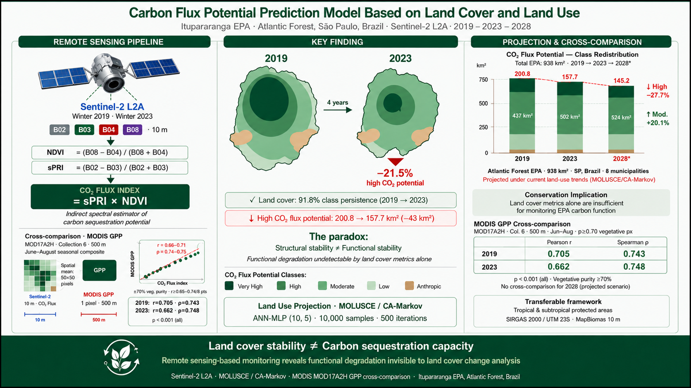
Painel-síntese do manuscrito, dividido em três blocos. À esquerda, a cadeia de processamento: cenas Sentinel-2 L2A de inverno (2019 e 2023) a 10 m, o cálculo do NDVI e do sPRI e a composição do índice de fluxo de CO₂ (sPRI × NDVI), com a comparação cruzada com o GPP do MODIS. Ao centro, o achado principal, contrastando a persistência da cobertura com a retração de 21,5% do alto potencial entre 2019 e 2023. À direita, a projeção para 2028 pelo MOLUSCE/CA-Markov e a tabela de correlações (Pearson e Spearman) que sustenta a validação.

Mapa de localização da APA de Itupararanga (938,31 km²) sobre imagem de satélite, com o limite oficial em traço preto e as cinco zonas do Plano de Manejo em cores: Conservação da Biodiversidade (ZCB), Conservação dos Recursos Hídricos (ZCRH), Ocupação Rural (ZOR), Ocupação Diversificada (ZOD) e Ocupação Consolidada (ZOC). Os mapas-índice situam a unidade no Estado de São Paulo e mostram os municípios abrangidos. A ZCRH acompanha a represa e seus afluentes; a ZCB concentra-se ao sul.
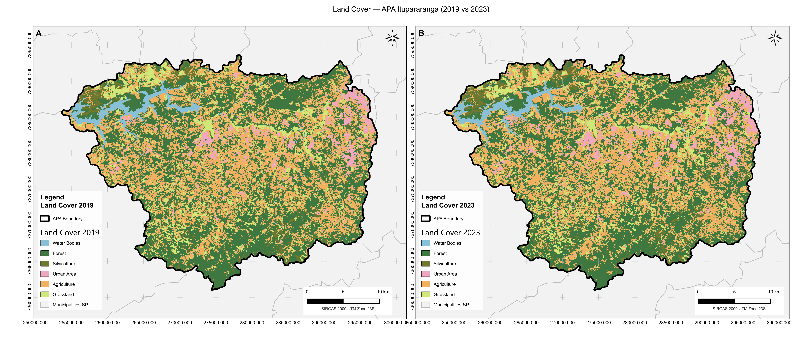
Dois painéis lado a lado com a cobertura e uso da terra da APA em 2019 (A) e 2023 (B), em seis classes: corpos d'água, floresta nativa, silvicultura, área urbana, agricultura e formação campestre. A semelhança visual entre os dois painéis é o ponto da figura: é ela que sustenta os 91,8% de persistência da cobertura e os 96,0% de estabilidade da floresta — a leitura convencional que o estudo se propõe a questionar.

Cenário de cobertura da terra projetado para 2028 pelo plugin MOLUSCE (QGIS), combinando rede neural artificial (ANN-MLP, 10.000 amostras e 500 iterações) com autômatos celulares e cadeias de Markov. O mapa mantém as mesmas seis classes dos anos observados, permitindo comparação direta, e indica continuidade da expansão agrícola e urbana sobre as zonas de transição ao norte e a leste da APA.
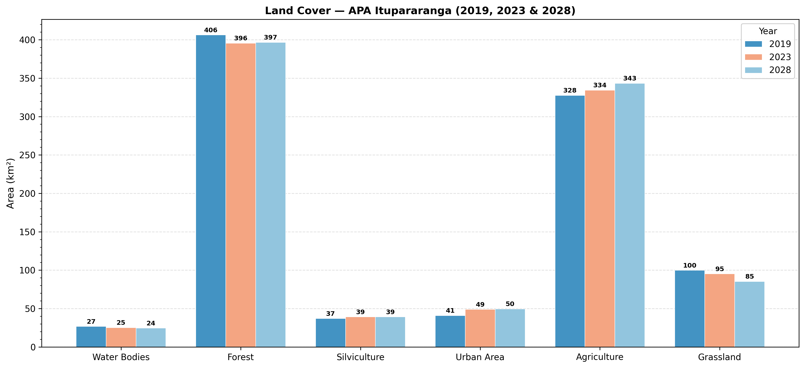
Gráfico de barras agrupadas com a área, em km², de cada classe de cobertura nos três anos. A floresta nativa aparece praticamente estável (406,25 → 395,50 → 396,59 km²), enquanto a área urbana cresce de 40,91 para 48,97 km² entre 2019 e 2023 e a agricultura avança de 327,60 para 334,30 km². É a quantificação que isola a variável 'supressão vegetal' e mostra que a conversão física de floresta foi pequena no período.
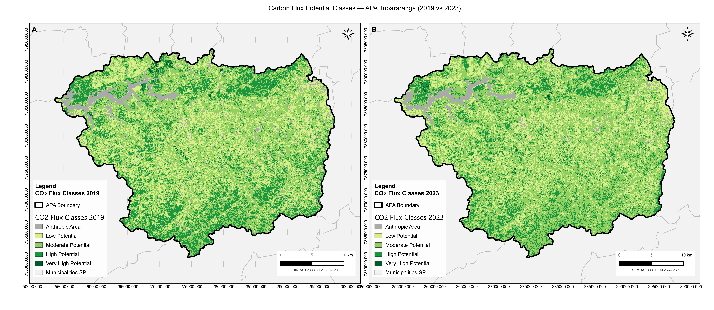
Mapas do proxy sPRI × NDVI estratificado em cinco classes — antrópica, baixo, moderado, alto e muito alto potencial — para 2019 (A) e 2023 (B). Diferentemente da figura de cobertura da terra, aqui a mudança é visível: as manchas verde-escuras de alto potencial encolhem e se fragmentam, e a classe moderada (verde-claro) domina a paisagem em 2023. É a principal evidência empírica do estudo.
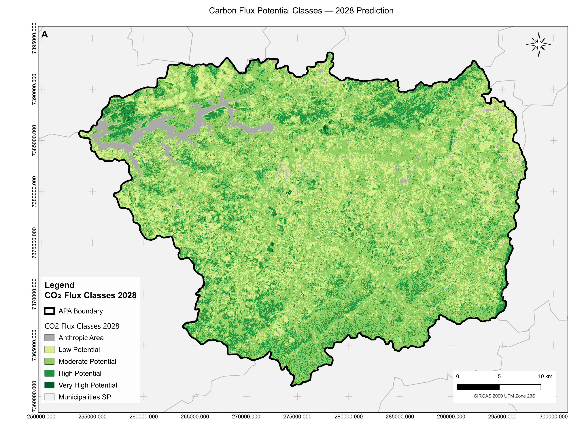
Aplicação da modelagem markoviana diretamente sobre as classes biofísicas de carbono, projetando o cenário de 2028. O alto potencial recua para 145,21 km² e as classes moderada e baixa se expandem proporcionalmente, indicando que, sem intervenção de restauração e contenção do efeito de borda, o declínio funcional continua avançando pelo interior dos maciços florestais.
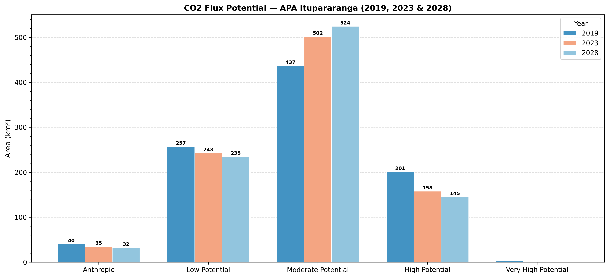
Gráfico de barras com a área de cada classe de potencial de fluxo de CO₂ nos três anos. A leitura direta mostra o alto potencial caindo de 200,83 km² (2019) para 157,72 km² (2023) e 145,21 km² (2028), enquanto a classe moderada sobe de 437,03 para 501,98 e 524,50 km². O muito alto potencial, mais raro, reduz-se de 3,14 para 1,49 km².

Mapas do produto MOD17A2H (NASA) de produtividade primária bruta acumulada no inverno austral, a 500 m de resolução, para 2019 (A) e 2023 (B), processados no Google Earth Engine. Os valores variam de 0,017 a 0,061 kg C m⁻² por estação. Por ser uma medida biofísica independente e consagrada, serve de referência externa para testar se a retração espectral captada pelo Sentinel-2 corresponde a uma queda real de fotossíntese.

Gráficos de dispersão entre o proxy de fluxo de CO₂ (eixo Y) e o GPP do MODIS (eixo X) para 2019 (A) e 2023 (B), com reta de ajuste linear. A cor dos pontos indica a pureza vegetal do pixel (≥ 70%). As correlações são fortes e significativas: Pearson r = 0,705 com n = 3.685 pixels em 2019 e r = 0,662 com n = 3.749 em 2023, ambos com p < 0,001.
Seleção rápida (clique no número para alternar):
Perguntas frequentes sobre este artigo
Clique em uma pergunta para ver a resposta. O conteúdo foi redigido a partir do próprio artigo — números, fórmulas e conclusões vêm do texto publicado.
Qual é a principal descoberta do estudo?
O desacoplamento entre estrutura e função da floresta. Entre 2019 e 2023 a cobertura florestal permaneceu 96,0% estável no mapa, mas as áreas de alto potencial de sequestro de CO₂ recuaram 21,5% (de 200,83 km² para 157,72 km²). O ponto crítico é que 95,7% dessa perda (65,66 km²) ocorreu dentro de áreas que continuaram classificadas como floresta — ou seja, uma degradação invisível ao monitoramento tradicional de desmatamento.
Como o fluxo de CO₂ foi calculado a partir do Sentinel-2?
O proxy é o produto sPRI × NDVI. O NDVI = (B08 − B04)/(B08 + B04) mede o vigor e a biomassa foliar ativa. O PRI adaptado ao Sentinel-2 usa (B02 − B03)/(B02 + B03) e o sPRI é seu escalonamento positivo, (PRI + 1)/2, que expressa a eficiência fotoquímica do uso da luz. A multiplicação modula a biomassa verde pela eficiência com que a planta efetivamente usa a radiação, aproximando-se da capacidade real de absorção de carbono.
Como o resultado foi validado?
Por comparação com uma fonte independente: o produto de produtividade primária bruta (GPP) do sensor MODIS (MOD17A2H, 500 m), processado no Google Earth Engine para a estação seca. A comparação usou apenas pixels com pureza vegetal ≥ 70%. Os coeficientes foram Pearson r = 0,705 (n = 3.685) em 2019 e r = 0,662 (n = 3.749) em 2023, com Spearman ρ de 0,743 e 0,748 — todos significativos a p < 0,001.
Como funciona a projeção para 2028?
A simulação usou o plugin MOLUSCE, no QGIS, combinando uma rede neural artificial do tipo Multi-Layer Perceptron (10.000 amostras e 500 iterações) com autômatos celulares e cadeias de Markov. O modelo aprende as transições observadas entre 2019 e 2023 em função de variáveis como declividade e distância de estradas e núcleos urbanos, e projeta o cenário de 2028: o alto potencial de fixação cai para 145,21 km².
O que o efeito de borda tem a ver com isso?
A perda funcional não é homogênea dentro do fragmento: a queda foi de 46,4% na faixa de até 20 m da borda florestal, contra 35,0% além de 200 m, no interior. Isso indica dessecação e estresse fisiológico avançando de fora para dentro — exatamente o processo que o monitoramento por corte raso não enxerga.
Quais são as recomendações práticas para a gestão da APA?
Três frentes: (1) incluir no Plano de Manejo o monitoramento funcional contínuo a 10 m, com alertas de perda de vigor, em vez de acompanhar apenas desmatamento; (2) delimitar faixas de amortecimento de 50 m e promover reflorestamento de borda nos fragmentos mais vulneráveis das zonas ZCRH e ZOR; e (3) condicionar repasses de ICMS Ecológico e a certificação de créditos de carbono à integridade funcional medida por satélite.
Evaluation of the Native Vegetation Index (IVEG) Using Ordered Weighted Averaging (OWA) for Environmental Fiscal Policy in São Paulo
Autores: Jomil Costa Abreu Sales e colaboradores (ESALQ/USP)
Minha participação: Primeiro autor
🎯 Estrutura Fundamental da Pesquisa: Da Pergunta à Solução Territorial
Síntese executiva dos fundamentos metodológicos, empíricos e práticos que norteiam este estudo:
O estudo trata o repasse fiscal ambiental como um problema de decisão multicritério, e não como uma fórmula fixa.
- Trabalho em fase de submissão: os resultados serão publicados aqui assim que o artigo for aceito.
Metodologia apresentada no *21st Symposium on Systems Analysis in Forest Resources* (SSAFR 2026, San Sebastián, Espanha).
🗺️ Figuras & Produtos Cartográficos do Artigo
A figura ativa é exibida em alta resolução. Use os botões abaixo dela para navegar entre as figuras do estudo e ler a descrição correspondente.
As figuras deste artigo ainda não foram publicadas. Assim que estiverem disponíveis, basta salvá-las em <code>artigos_midia/artigo_02_iveg_owa/</code> para que apareçam aqui.
Perguntas frequentes sobre este artigo
Clique em uma pergunta para ver a resposta. O conteúdo foi redigido a partir do próprio artigo — números, fórmulas e conclusões vêm do texto publicado.
O que é o IVEG?
O Índice de Vegetação Nativa é um dos componentes ambientais usados pelo Estado de São Paulo na repartição do ICMS Ambiental entre municípios, ao lado de índices como o de áreas protegidas, o de reservatórios de água e o de resíduos sólidos.
O que o OWA acrescenta à análise?
Os operadores de média ponderada ordenada (Ordered Weighted Averaging) permitem variar, de forma controlada, o grau de compensação entre critérios e a atitude do decisor diante do risco. Na prática, tornam explícito o que costuma ficar implícito na fórmula de rateio e permitem simular cenários de repasse.
Qual é o estágio do trabalho?
Em submissão, com apresentação no 21st Symposium on Systems Analysis in Forest Resources (SSAFR 2026), em San Sebastián, na Espanha. Os resultados e as figuras serão publicados nesta página após a aceitação.
The Influence of Land Use and Land Cover on Surface Temperature in a Water Catchment Sub-Basin
Autores: Arthur Pereira dos Santos; Henzo Henrique Simionatto; Letícia Tondato Arantes; Vanessa Cezar Simonetti; Renan Angrizani de Oliveira; Jomil Costa Abreu Sales; Darllan Collins da Cunha e Silva
Minha participação: Coautor — administração do projeto, recursos, supervisão e revisão formal
Acessar o artigo (DOI 10.14393/SN-v35-2023-69161) ↗
🎯 Estrutura Fundamental da Pesquisa: Da Pergunta à Solução Territorial
Síntese executiva dos fundamentos metodológicos, empíricos e práticos que norteiam este estudo:
A área foi escolhida justamente por concentrar conflitos de uso da água e por ser a única fonte de captação de Paracatu.
- Vegetação mais fria em toda a série: a LST média da vegetação ficou abaixo da agricultura nos três anos — 18,58 °C contra 20,21 °C (1990), 22,29 contra 24,38 °C (2005) e 20,93 contra 22,55 °C (2020), uma diferença de 1,62 °C a 2,09 °C.
- Conservação com efeito: a vegetação passou de 796,5 km² (64,8%) para 819,0 km² (66,7%) da sub-bacia, enquanto a agricultura recuou de 429,3 km² para 405,9 km² em 30 anos.
- Solo exposto aquece: a classe de área não vegetada apresentou aumento médio de LST próximo de 5 °C no período, e também ampliou sua área.
- Água amortece: a classe de recursos hídricos apresentou redução de cerca de 1,5 °C, com as variações mais suaves entre todas as classes.
- Diferença estatisticamente testada: as médias entre as classes de vegetação e agricultura foram comparadas pelo teste de Tukey a 5% de significância.
Manter e ampliar a cobertura vegetal na área de captação: o ganho de 22,5 km² de vegetação em 30 anos acompanhou a estabilização térmica da sub-bacia.
Tratar solo exposto como prioridade: é a classe com maior aquecimento (~5 °C) e a que mais amplifica a perda de água por evaporação.
Usar a LST como indicador de apoio à outorga: a série Landsat permite acompanhar, sem custo de campo, o efeito térmico das mudanças de uso sobre o manancial.
🗺️ Figuras & Produtos Cartográficos do Artigo
A figura ativa é exibida em alta resolução. Use os botões abaixo dela para navegar entre as figuras do estudo e ler a descrição correspondente.
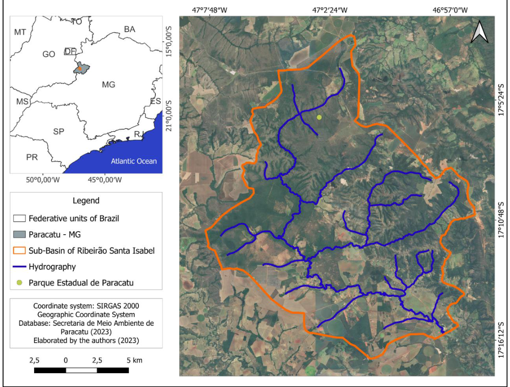
Localização da sub-bacia do Ribeirão Santa Isabel, em Paracatu (MG), sobre imagem de satélite. O limite da sub-bacia aparece em laranja, a rede de drenagem em azul e os pontos verdes marcam o Parque Estadual de Paracatu. O mapa-índice à esquerda situa a área no Brasil e em Minas Gerais. A sub-bacia soma 1.227,6 km² e é o único ponto de captação de água do município.
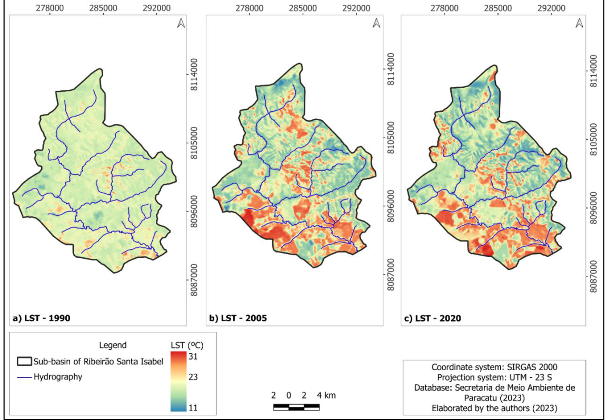
Três painéis com a temperatura de superfície (LST) da sub-bacia em 1990, 2005 e 2020, na mesma escala de cores (11 °C em azul a 31 °C em vermelho), o que permite comparação direta entre os anos. O painel de 1990 é predominantemente frio; 2005 concentra as manchas mais quentes, sobretudo no setor sul; e 2020 apresenta padrão intermediário. Os fundos de vale e as áreas vegetadas permanecem mais frios em todos os anos.
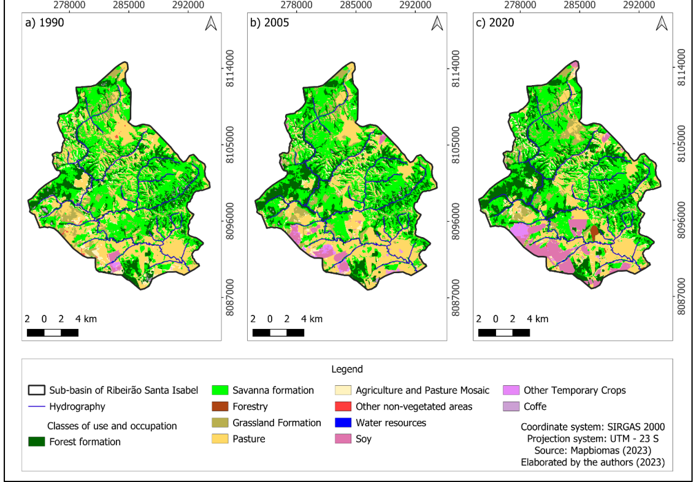
Mapas de uso e cobertura da terra para os mesmos três anos, a partir da coleção MapBiomas (Nível 6). As classes incluem formação florestal, formação savânica, formação campestre, pastagem, mosaico de agricultura e pastagem, soja, café, outras lavouras temporárias, silvicultura, áreas não vegetadas e corpos d'água. Comparados com a figura anterior, os mapas mostram a correspondência espacial entre as manchas agrícolas e as áreas termicamente mais quentes.
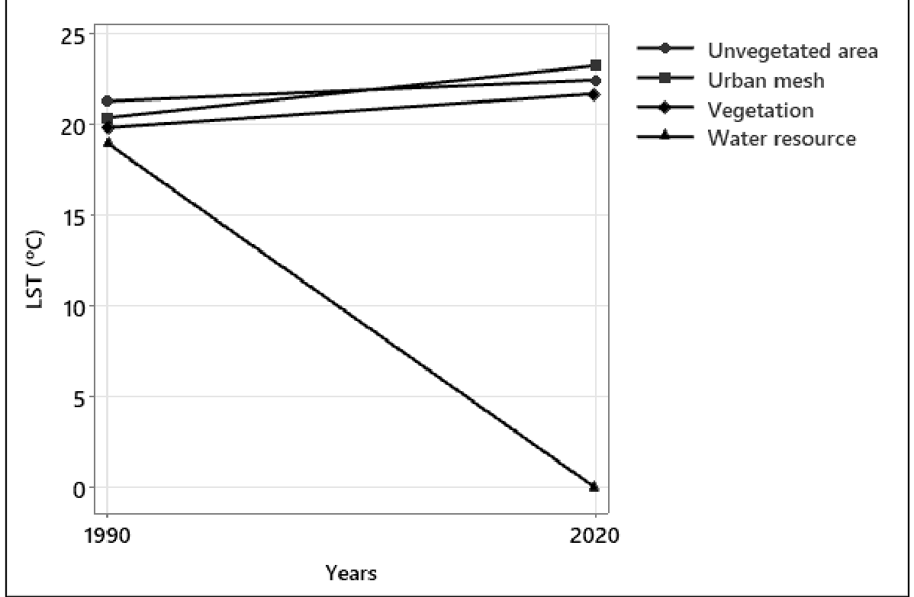
Gráfico de linhas comparando a temperatura média de cada classe temática entre 1990 e 2020: área não vegetada, malha urbana, vegetação e recursos hídricos. A leitura principal é a inclinação das curvas — a classe de área não vegetada é a que mais aquece no período, enquanto a vegetação se mantém na faixa mais baixa do gráfico.
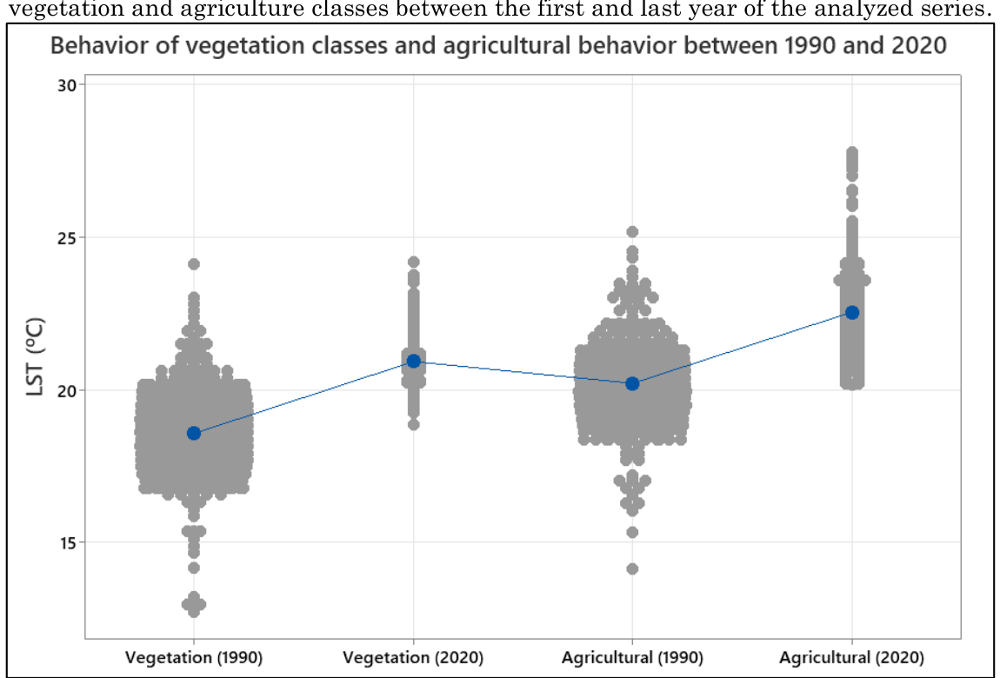
Distribuição dos valores de LST nas classes de vegetação e agricultura no primeiro e no último ano da série (1990 e 2020), com a média destacada em azul. Os quatro grupos mostram que a agricultura tem mediana e dispersão superiores às da vegetação nos dois momentos, sustentando a diferença detectada pelo teste de Tukey a 5%.
Seleção rápida (clique no número para alternar):
Perguntas frequentes sobre este artigo
Clique em uma pergunta para ver a resposta. O conteúdo foi redigido a partir do próprio artigo — números, fórmulas e conclusões vêm do texto publicado.
Qual foi a diferença de temperatura entre vegetação e agricultura?
A vegetação foi sistematicamente mais fria: 18,58 °C contra 20,21 °C em 1990, 22,29 °C contra 24,38 °C em 2005 e 20,93 °C contra 22,55 °C em 2020. A diferença média ficou entre 1,62 °C e 2,09 °C, dependendo do ano.
Quais dados e sensores foram usados?
A temperatura de superfície foi calculada a partir das bandas termais do Landsat-5 TM e do Landsat-8 TIRS/OLI para 1990, 2005 e 2020. O uso e a cobertura da terra vieram da coleção MapBiomas (Nível 6, base Landsat, 30 m), e o cruzamento entre LST e classes foi feito em ambiente SIG, com teste de Tukey a 5% de significância.
Por que essa sub-bacia foi escolhida?
Porque o Ribeirão Santa Isabel é o único manancial de captação de Paracatu (MG) e concentra conflitos de uso da água ligados à intensidade da atividade agrícola na região — o município já precisou alterar o ponto de captação por causa dessa pressão.
O resultado indica melhora ou piora ambiental?
Melhora na cobertura: a vegetação cresceu de 64,8% para 66,7% da sub-bacia e a agricultura recuou, o que sugere efeito das práticas de conservação adotadas. O alerta fica por conta das áreas não vegetadas, que aumentaram de área e apresentaram aquecimento médio próximo de 5 °C no período.
Análise espacial da distribuição do ensino em função da renda em uma bacia hidrográfica
Autores: Jomil Costa Abreu Sales; Camille Vasconcelos Silva; Darllan Collins da Cunha e Silva; Omar Yazbek Bitar; Roberto Wagner Lourenço
Minha participação: Primeiro autor
Acessar o artigo (DOI 10.31413/nativa.v10i1.13137) ↗
🎯 Estrutura Fundamental da Pesquisa: Da Pergunta à Solução Territorial
Síntese executiva dos fundamentos metodológicos, empíricos e práticos que norteiam este estudo:
A bacia abastece a represa de Itupararanga, manancial de mais de 1,5 milhão de pessoas, o que liga a questão social à gestão do território.
- Concentração de baixa renda: 61,50% da área da bacia é ocupada por população com renda per capita inferior a meio salário mínimo; apenas 14,81% da área, próxima ao centro urbano, supera essa faixa.
- Correlação só na população adulta: pelo teste de Pearson, houve correlação entre renda e escolaridade apenas na faixa acima de 20 anos — crianças e jovens acessam a escola pública independentemente da renda familiar.
- Coincidência espacial: as áreas de menor renda e menor escolaridade coincidem com as porções de maior vocação agrícola, distantes do núcleo urbano (cerca de 36% da bacia é de uso agrícola).
- Dependência espacial confirmada: os semivariogramas mostraram forte dependência espacial para as faixas de 11 a 13 anos e acima de 20 anos, e dependência moderada nas demais variáveis.
- Escolas concentradas: o mapa de densidade de Kernel mostra a rede escolar concentrada no norte e nordeste da bacia, acompanhando a distribuição da população.
Priorizar as áreas rurais do centro-sul da bacia em programas de alfabetização e educação de jovens e adultos, que é onde renda e escolaridade caem juntas.
Usar o mapeamento como instrumento de gestão ambiental: a educação é apontada no estudo como ferramenta de prevenção e de conscientização na gestão do manancial.
Substituir a média municipal por análise setorizada no desenho de políticas públicas — o IDH de Ibiúna (0,710) esconde a variação interna da bacia.
🗺️ Figuras & Produtos Cartográficos do Artigo
A figura ativa é exibida em alta resolução. Use os botões abaixo dela para navegar entre as figuras do estudo e ler a descrição correspondente.
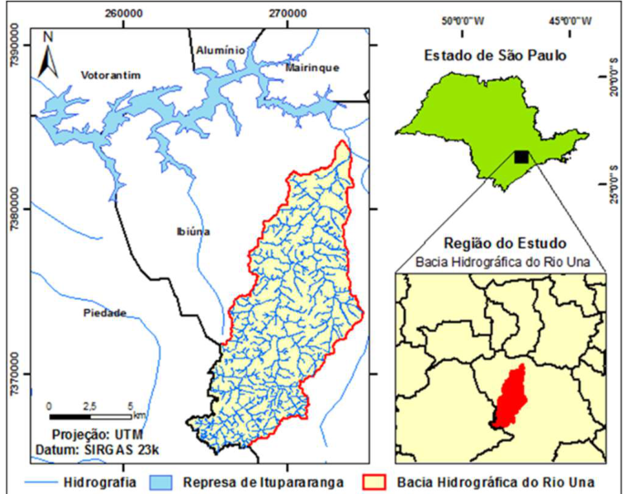
Mapa de localização da BHRU, no município de Ibiúna (SP), a cerca de 75 km da capital. O limite da bacia aparece em vermelho, a hidrografia em azul e a represa de Itupararanga em destaque, com os municípios vizinhos (Votorantim, Alumínio, Mairinque, Piedade) nomeados. Os mapas-índice situam a área no Estado de São Paulo.
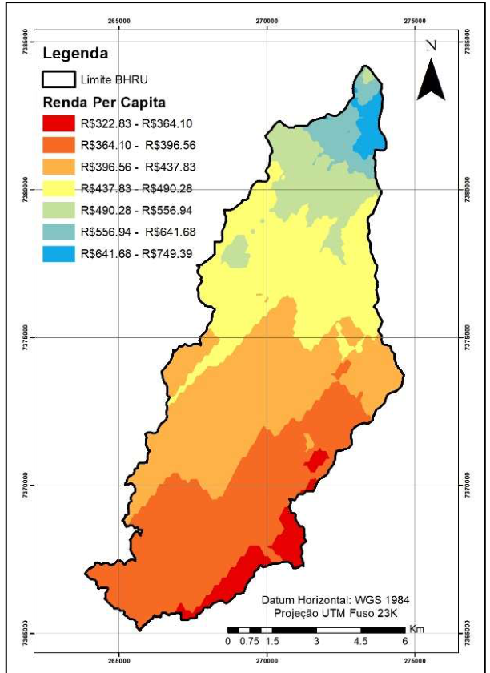
Superfície contínua de renda per capita obtida por krigagem ordinária a partir dos setores censitários do Censo 2010. As sete faixas vão de R$ 322,83 a R$ 749,39. O gradiente é claro: as maiores rendas (azul) concentram-se ao norte, junto ao núcleo urbano, e caem progressivamente em direção ao sul rural (laranja e vermelho), onde predomina o uso agrícola.
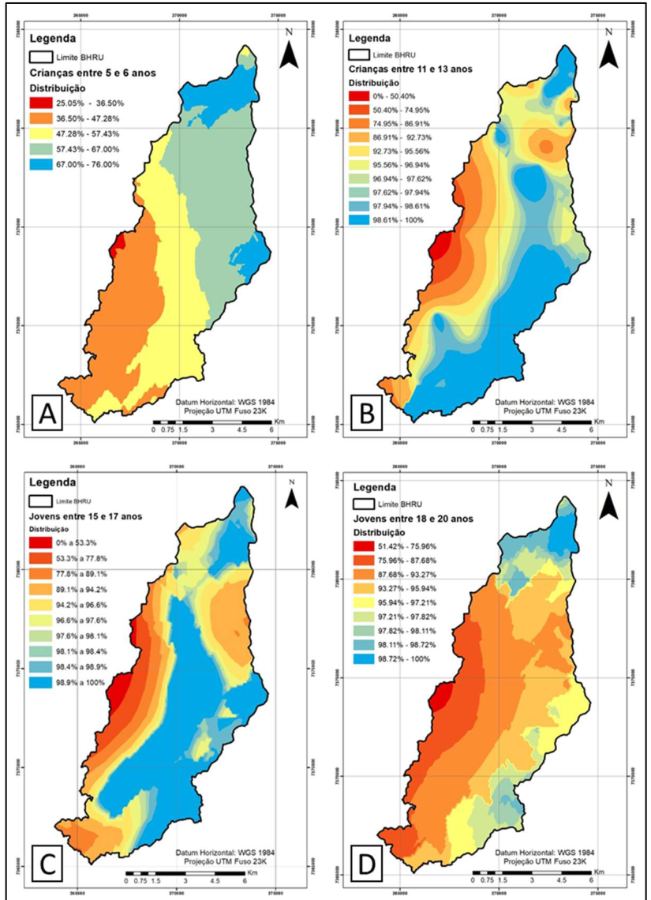
Quatro painéis com a distribuição do fluxo escolar na bacia para as faixas de 5 a 6 (A), 11 a 13 (B), 15 a 17 (C) e 18 a 20 anos (D), cada um interpolado separadamente. A comparação entre os painéis mostra que o padrão espacial muda com a idade: as faixas mais jovens apresentam cobertura mais homogênea, enquanto as faixas mais velhas concentram os melhores índices próximo às áreas urbanizadas.
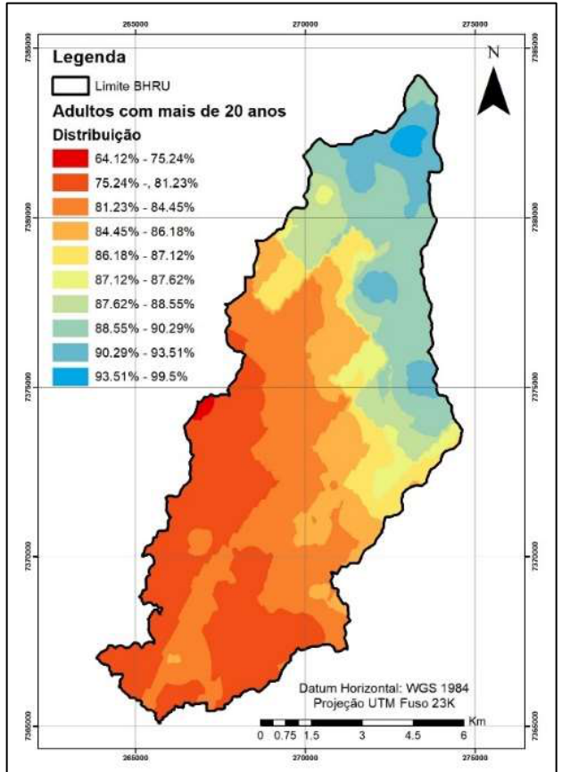
Distribuição do índice de escolaridade da população com mais de 20 anos, variando de 64,12% a 99,5%. É a variável que apresentou correlação significativa com a renda: o mapa reproduz de perto o padrão da figura de renda per capita, com os menores índices no sul e no oeste rural da bacia.
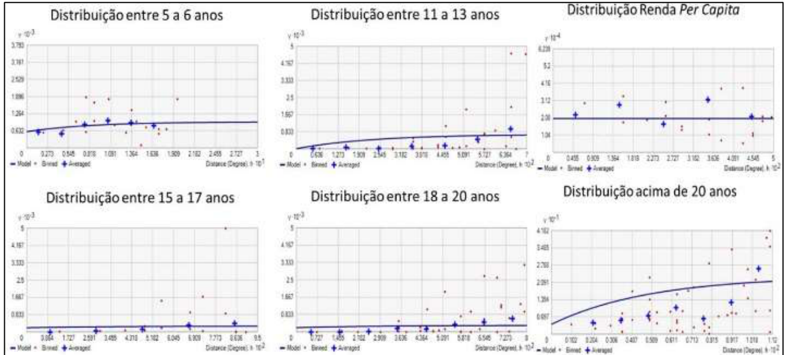
Painel com os semivariogramas experimentais ajustados aos modelos teóricos para a renda per capita e para cada faixa de escolaridade. São eles que justificam o uso da krigagem: o índice de dependência espacial ficou entre 1,39% e 50%, com forte dependência espacial nas faixas de 11 a 13 anos e acima de 20 anos.
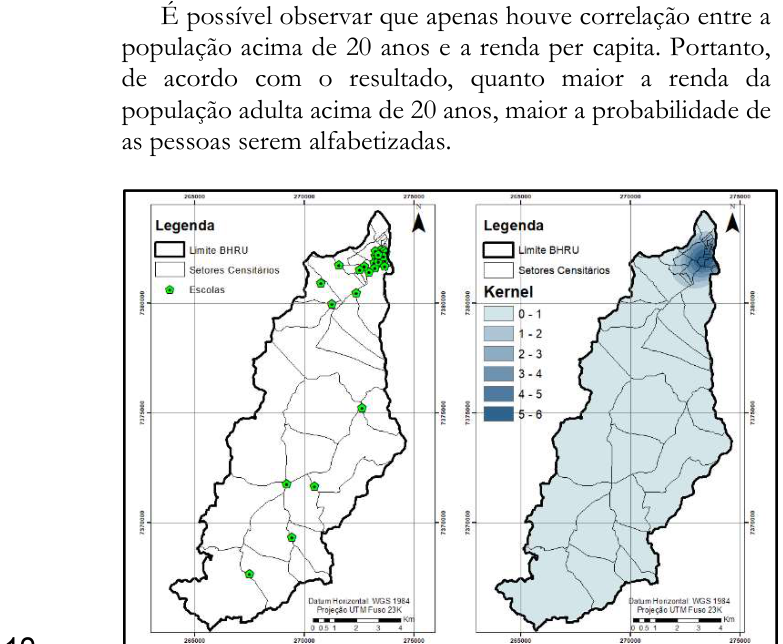
À esquerda, a localização das escolas na bacia sobre a malha de setores censitários; à direita, a densidade obtida pelo estimador de Kernel, em seis classes. A concentração no norte e nordeste explica por que os índices de escolaridade caem à medida que os setores se afastam do núcleo urbano.
Seleção rápida (clique no número para alternar):
Perguntas frequentes sobre este artigo
Clique em uma pergunta para ver a resposta. O conteúdo foi redigido a partir do próprio artigo — números, fórmulas e conclusões vêm do texto publicado.
Renda e escolaridade estão correlacionadas na bacia?
Sim, mas apenas na população adulta. O teste de Pearson mostrou correlação significativa somente na faixa acima de 20 anos: quanto maior a renda, maior a probabilidade de a pessoa ser alfabetizada. Nas faixas de 5 a 20 anos não houve correlação, o que é atribuído ao acesso à escola pública independentemente da renda familiar.
Que métodos geoestatísticos foram usados?
Krigagem ordinária para interpolar renda e escolaridade a partir dos 43 setores censitários da bacia, com validação pelos semivariogramas (índice de dependência espacial entre 1,39% e 50%), e estimador de densidade de Kernel para a distribuição das escolas. Os dados vieram do Censo Demográfico de 2010.
Qual é o retrato de renda da bacia?
61,50% da área da bacia é ocupada por população com renda per capita inferior a meio salário mínimo, e apenas 14,81% da área — concentrada junto ao centro urbano — fica acima dessa faixa. A renda cai à medida que se afasta do núcleo urbano, acompanhando a vocação agrícola da bacia.
Por que esse tema aparece num portfólio ambiental?
Porque a bacia do Rio Una é um dos principais contribuintes da represa de Itupararanga, manancial de mais de 1,5 milhão de pessoas. O estudo trata escolaridade e renda como variáveis territoriais que ajudam a explicar a pressão sobre o manancial e a orientar políticas de educação ambiental onde elas têm mais efeito.
Creation of an environmental sustainability index for water resources applied to watersheds
Autores: Darllan Collins da Cunha e Silva; Renan Angrizani Oliveira; Vanessa Cezar Simonetti; Bruno Pereira Toniolo; Jomil Costa Abreu Sales; Roberto Wagner Lourenço
Minha participação: Coautor
Acessar o artigo (DOI 10.1007/s10668-022-02527-9) ↗
🎯 Estrutura Fundamental da Pesquisa: Da Pergunta à Solução Territorial
Síntese executiva dos fundamentos metodológicos, empíricos e práticos que norteiam este estudo:
O índice foi construído para ser replicável: uma vez definidos os pesos, podem ser aplicados a outras bacias, permitindo comparação.
- Índice sintético WRSI: varia de 0 (pior condição) a 1 (melhor) e resulta da agregação de três indicadores — PWI (qualidade físico-química da água), WVI (vegetação úmida) e PWDI (saneamento) — ponderados por AHP.
- Diagnóstico da bacia: cerca de 24% da área apresentou WRSI em torno de 0,6, condição classificada como regular; valores acima de 0,9 seriam os desejáveis.
- Piores condições onde há agricultura e saneamento precário: os menores valores concentram-se nas sub-bacias rurais do centro e do sul, que combinam uso agrícola predominante e ausência de coleta de esgoto.
- Mata ciliar fragilizada: os valores de integridade das matas ciliares (WPI) são baixos em toda a bacia, inclusive na porção mais preservada ao sul.
- Estresse hídrico na vegetação: o WVI mostrou vegetação sob estresse nas áreas urbanas e agrícolas, enquanto na região norte os valores ficaram acima de 0,9.
Priorizar saneamento rural: o PWDI ficou abaixo de 0,5 em toda a bacia, indicando que a coleta e o tratamento de esgoto são o gargalo mais imediato.
Recompor matas ciliares nas faixas de até 30 m dos cursos d'água, onde o índice de integridade se mostrou consistentemente baixo.
Adotar o WRSI como instrumento de comparação e acompanhamento entre sub-bacias, já que os pesos definidos pelo AHP podem ser replicados em outras bacias.
🗺️ Figuras & Produtos Cartográficos do Artigo
A figura ativa é exibida em alta resolução. Use os botões abaixo dela para navegar entre as figuras do estudo e ler a descrição correspondente.
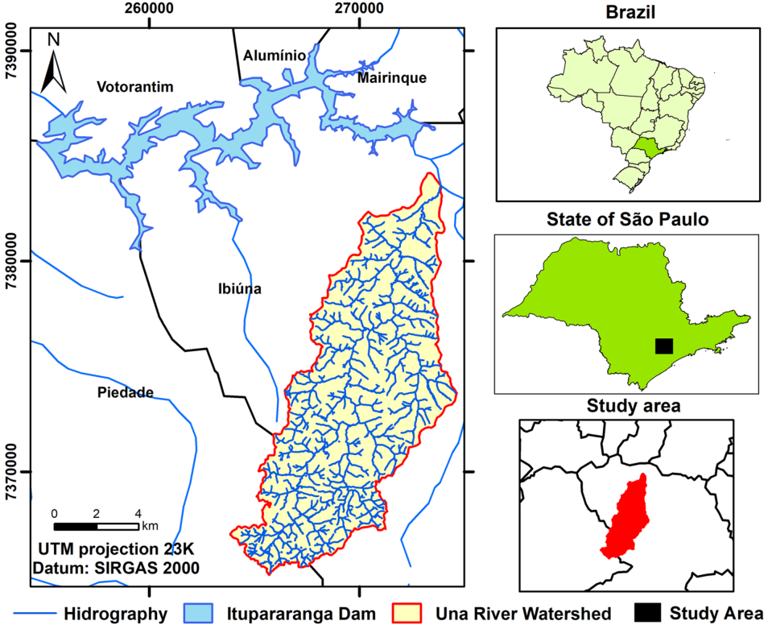
Mapa de localização da bacia do Rio Una, em Ibiúna (SP), com o limite em vermelho, a hidrografia e a represa de Itupararanga ao norte. Os mapas-índice mostram a posição da bacia no Brasil, no Estado de São Paulo e na região.
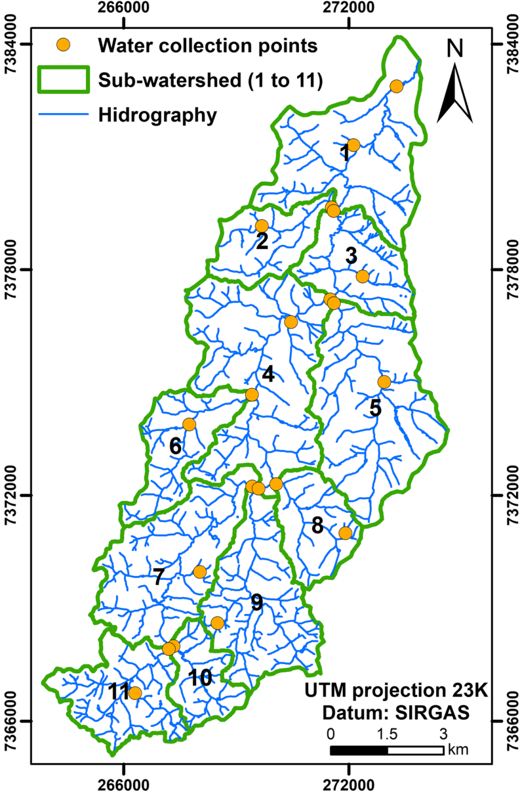
Distribuição dos pontos de amostragem de água (em laranja) sobre a divisão da bacia em 11 sub-bacias numeradas, com a hidrografia detalhada. É essa malha de sub-bacias que organiza todos os demais mapas do estudo e permite comparar os índices entre si.
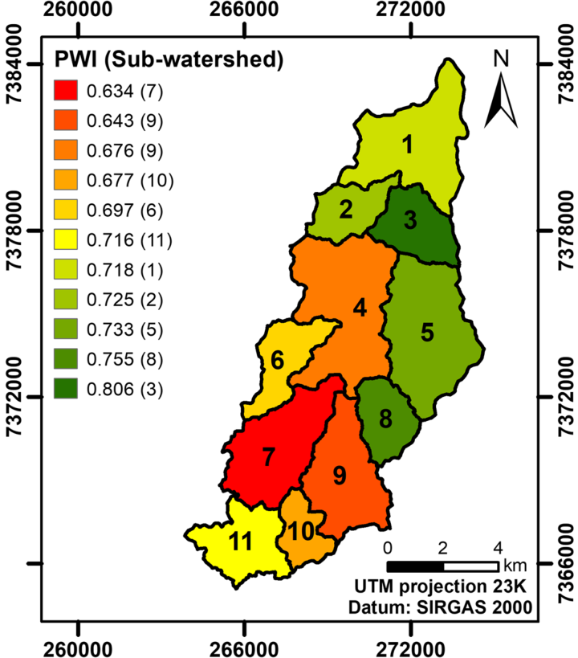
Distribuição do PWI por sub-bacia, com valores entre 0,634 e 0,806 e escala de cor do vermelho (pior) ao verde-escuro (melhor). Os piores valores concentram-se nas sub-bacias do sul e do sudoeste, enquanto as melhores condições aparecem ao norte e a leste da bacia.
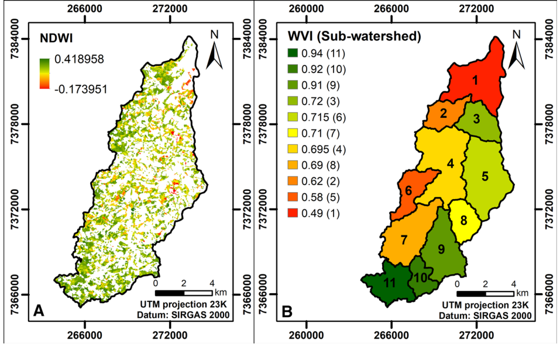
À esquerda (A), o NDWI calculado para as áreas florestais, em que os tons alaranjados indicam vegetação com menor conteúdo de água — inclusive valores negativos, de alto estresse hídrico. À direita (B), o índice de vegetação úmida (WVI) agregado por sub-bacia, de 0,49 a 0,94. A vegetação mais estressada está nas áreas urbanas e agrícolas, onde compete por água com as atividades antrópicas.
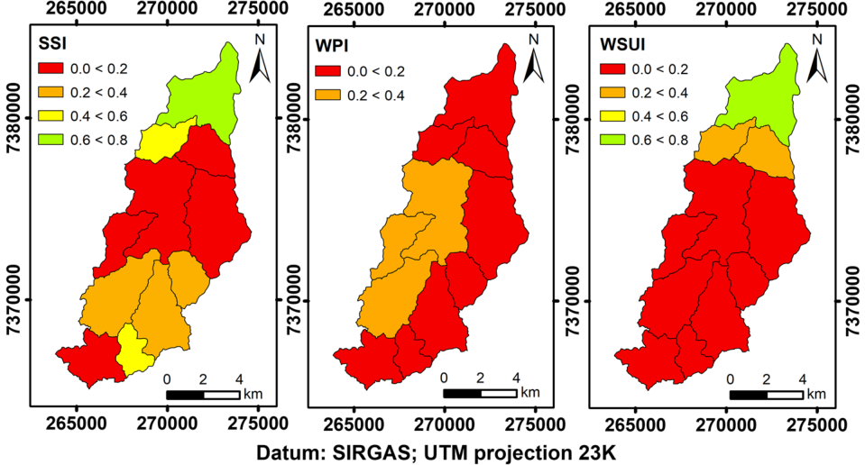
Três mapas na mesma escala (0 a 0,8) com os componentes do diagnóstico: SSI (condição sanitária), WPI (integridade das matas ciliares) e WSUI (uso da água). O WPI aparece inteiramente nas duas faixas mais baixas, evidenciando mata ciliar fragilizada em toda a bacia; o SSI mostra as piores condições no centro e no sul, áreas rurais sem coleta de esgoto.
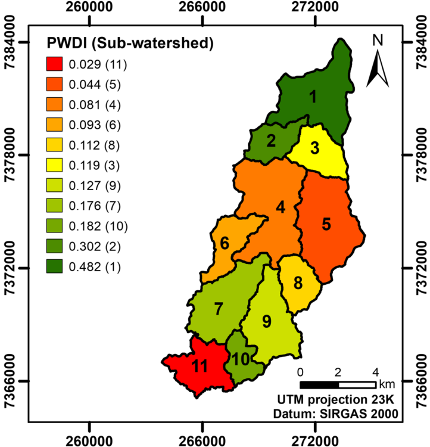
Distribuição do PWDI por sub-bacia, com valores de 0,029 a 0,482 — todos abaixo de 0,5, ou seja, menos da metade do valor máximo admitido para o índice. Os piores resultados estão nas sub-bacias do sul e do centro, onde se somam a falta de gestão na distribuição de água para consumo humano e o lançamento de esgoto doméstico.
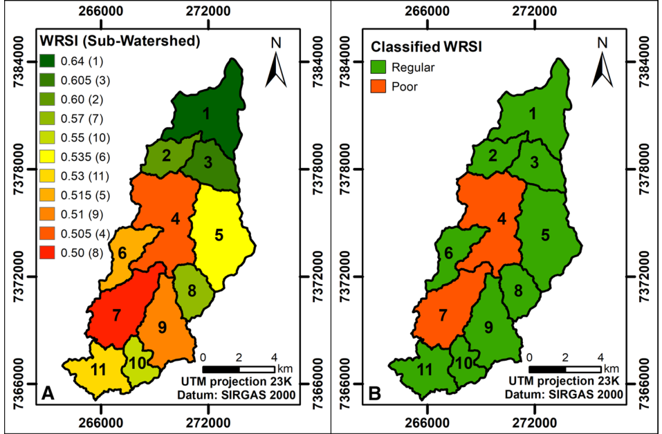
Resultado final do estudo: à esquerda (A), os valores contínuos do WRSI por sub-bacia, de 0,50 a 0,64; à direita (B), a mesma informação reclassificada em duas categorias, Regular (verde) e Poor (laranja). As sub-bacias classificadas como ruins são as rurais, de predomínio agrícola e saneamento precário.
Seleção rápida (clique no número para alternar):
Perguntas frequentes sobre este artigo
Clique em uma pergunta para ver a resposta. O conteúdo foi redigido a partir do próprio artigo — números, fórmulas e conclusões vêm do texto publicado.
O que é o WRSI e como ele é calculado?
O Water Resources Sustainability Index é um índice sintético que varia de 0 (pior condição) a 1 (melhor). Ele agrega três indicadores — o PWI, de qualidade físico-química da água; o WVI, de vegetação úmida; e o PWDI, ligado ao saneamento e ao potencial de degradação — ponderados pelo método de Análise Hierárquica de Processos (AHP).
Por que usar AHP para definir os pesos?
Porque o AHP converte julgamentos de importância relativa em pesos numéricos consistentes, por meio de uma matriz de comparação pareada entre as variáveis, com verificação do índice de consistência. Definidos uma vez, esses pesos podem ser replicados em outras bacias, o que mantém a integridade do índice e permite comparação.
Qual foi o diagnóstico da bacia estudada?
Cerca de 24% da área apresentou WRSI em torno de 0,6 — condição regular, quando o desejável seria acima de 0,9. As piores condições estão nas sub-bacias rurais do centro e do sul, que combinam predomínio agrícola e saneamento básico precário. O PWDI ficou abaixo de 0,5 em toda a bacia.
Qual é a principal limitação do estudo?
O próprio artigo aponta: o componente de saneamento usa dados do Censo Demográfico de 2010, o último disponível na época (o censo de 2020 não foi realizado por causa da pandemia). Os autores sugerem, para trabalhos futuros, uma análise temporal com dados de mesmo ano-base e a comparação com outros métodos de decisão multicritério.
Reflexos Ambientais do Desenvolvimento e Expansão das Atividades Humanas sobre a Qualidade da Água
Autores: Roberto Wagner Lourenço; Jomil Costa Abreu Sales; Leticia Tondato Arantes; Camille Vasconcelos Silva; Darllan Collins da Cunha e Silva
Minha participação: Segundo autor
Acessar o artigo (DOI 10.26848/rbgf.v15.1.p176-198) ↗
🎯 Estrutura Fundamental da Pesquisa: Da Pergunta à Solução Territorial
Síntese executiva dos fundamentos metodológicos, empíricos e práticos que norteiam este estudo:
O estudo liga, no mesmo território, a dinâmica de uso da terra, o desenvolvimento humano e os parâmetros de qualidade da água monitorados pela CETESB.
- Perda florestal expressiva: a floresta caiu de 5.580,39 ha (57,88% da bacia) em 1991 para 3.574,66 ha (37,06%) em 2016.
- Agricultura dobrou: a classe agrícola cresceu cerca de 105% no período, um acréscimo de 1.831,23 ha, passando a ocupar 35,99% da bacia.
- Paisagem majoritariamente antrópica: somadas as classes de origem humana (área urbana, reflorestamento, pastagem e agricultura), elas ocupam 54,13% da bacia.
- IQA estável, mas apenas regular: entre 2005 e 2015 o Índice de Qualidade da Água manteve-se sempre na faixa regular (valores entre 39 e 50, dentro do intervalo > 36 e ≤ 51).
- Fósforo acima do limite legal: o parâmetro fósforo total superou o valor estabelecido pela Resolução CONAMA, indicando fontes difusas de poluição ligadas às atividades agrícola e urbana.
Controle de fontes difusas na área agrícola, que concentra o aporte de nutrientes responsável pela eutrofização do manancial.
Ampliação do saneamento básico, apontado como um dos vetores diretos da degradação da qualidade da água.
Contenção da supressão de vegetação, já que a perda florestal acompanhou, no mesmo período, a elevação dos indicadores de pressão sobre a água.
🗺️ Figuras & Produtos Cartográficos do Artigo
A figura ativa é exibida em alta resolução. Use os botões abaixo dela para navegar entre as figuras do estudo e ler a descrição correspondente.
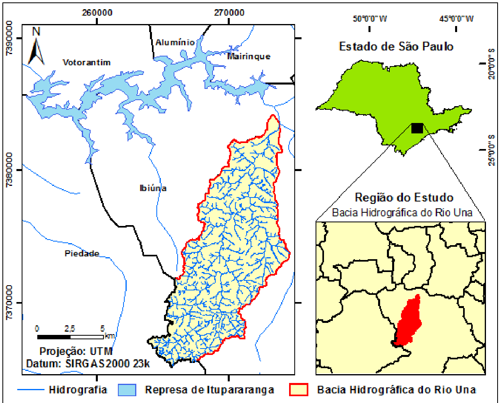
Localização da Bacia Hidrográfica do Rio Una, em Ibiúna (SP), com o limite em vermelho, a hidrografia e a represa de Itupararanga ao norte. A bacia integra a UGRHI 10 (Sorocaba e Médio Tietê) e, junto com os rios Sorocabuçu e Sorocamirim, alimenta o reservatório de Itupararanga.
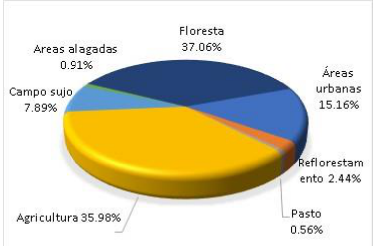
Gráfico de setores com a participação de cada classe de uso e cobertura em 2016: floresta 37,06%, agricultura 35,98%, áreas urbanas 15,16%, campo sujo 7,89%, reflorestamento 2,44%, áreas alagadas 0,91% e pasto 0,56%. Somadas, as classes antrópicas superam a metade da bacia.
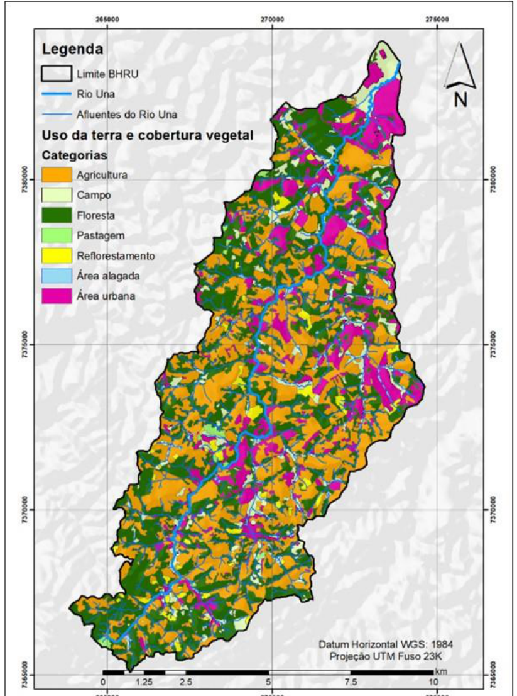
Mapa temático da bacia em 2016, com sete classes de uso e cobertura. A região central e sudoeste é predominantemente agrícola (laranja), enquanto a expansão urbana (magenta) se destaca na porção centro-sul, ao longo dos eixos viários. Os fragmentos florestais (verde-escuro) aparecem dispersos e fragmentados pela matriz agrícola.
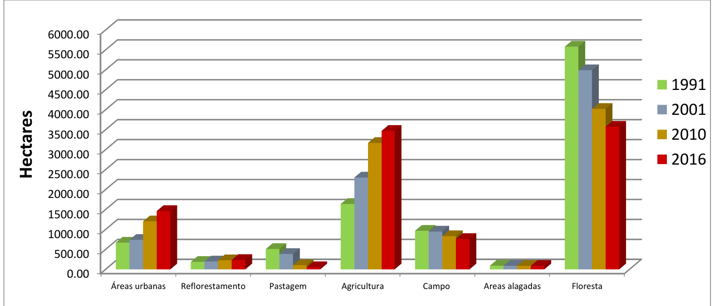
Gráfico de barras comparando a área, em hectares, de cada classe nos quatro anos analisados (1991, 2001, 2010 e 2016). A leitura é direta: as barras da floresta decrescem ano a ano, enquanto as da agricultura e das áreas urbanas crescem de forma contínua ao longo dos 25 anos.
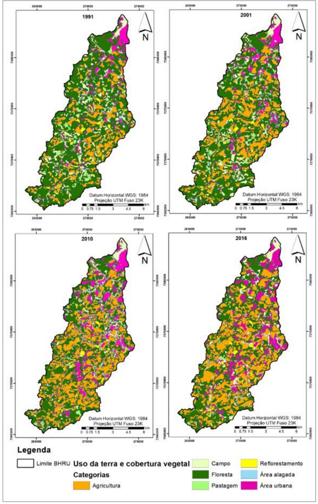
Quatro mapas na mesma legenda, um para cada ano da série. A sequência mostra a matriz verde de 1991 sendo progressivamente substituída pelo laranja da agricultura e pelo magenta da área urbana, que se adensa na porção central da bacia.
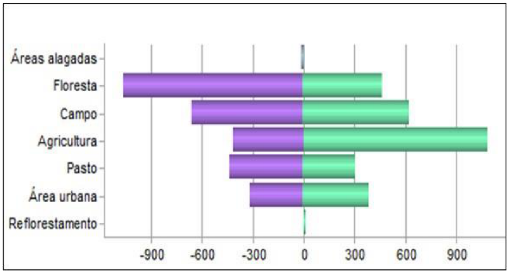
Gráfico de barras divergentes: à esquerda (roxo) as perdas e à direita (verde) os ganhos de cada classe, em hectares, no primeiro intervalo da série. A floresta aparece com a maior perda do período (594 ha) e a agricultura com o maior ganho (665 ha).
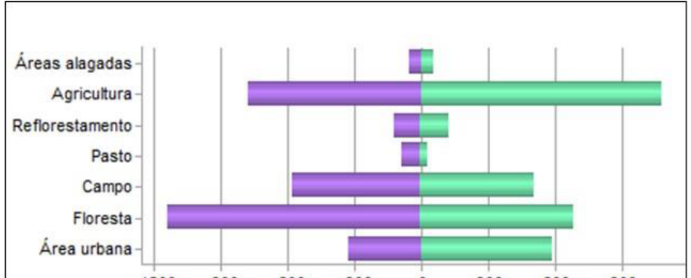
À esquerda (A), o mapa das transições entre classes no período, com cada combinação de origem e destino em uma cor. À direita (B), o mapa de permanência, mostrando o que não mudou. Apesar da maior perda absoluta, a floresta foi também a classe com maior área de permanência (4.521,82 ha).
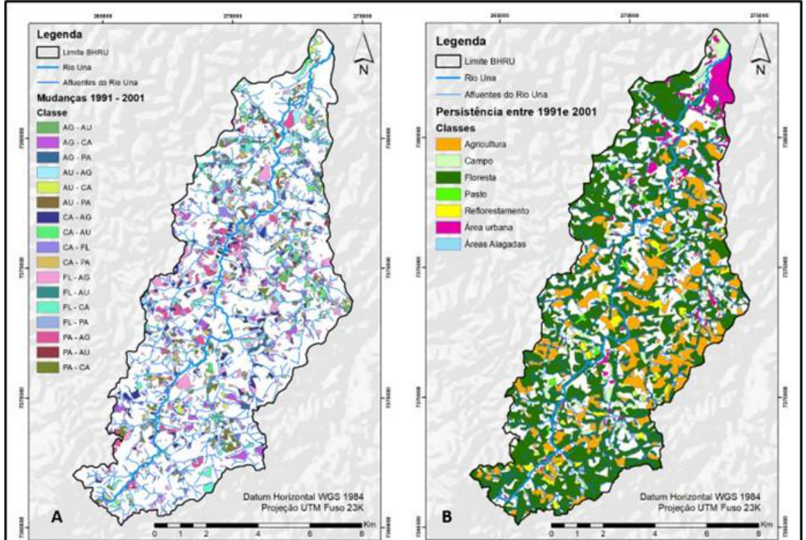
Mesmo formato de barras divergentes da figura anterior, agora para o intervalo final da série. O padrão se repete e se intensifica: a agricultura lidera os ganhos, enquanto floresta e campo concentram as perdas.
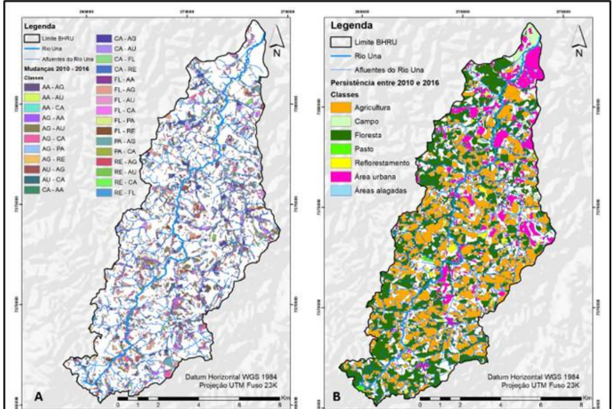
Mapas de transição (A) e de permanência (B) para o intervalo de 2010 a 2016. A área de floresta que permaneceu estável caiu para 2.889,99 ha, enquanto as áreas agrícolas praticamente dobraram sua extensão em relação ao início da série.
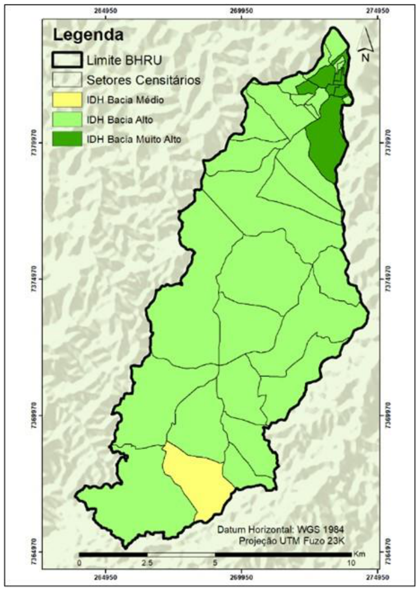
Mapa temático do IDH dos setores censitários da bacia em 2010, classificados conforme as faixas do PNUD. Predominam as classes alto e muito alto (verdes), com um único setor na faixa média (amarelo), ao sul — o mesmo setor rural onde os indicadores de saneamento e renda são mais frágeis.
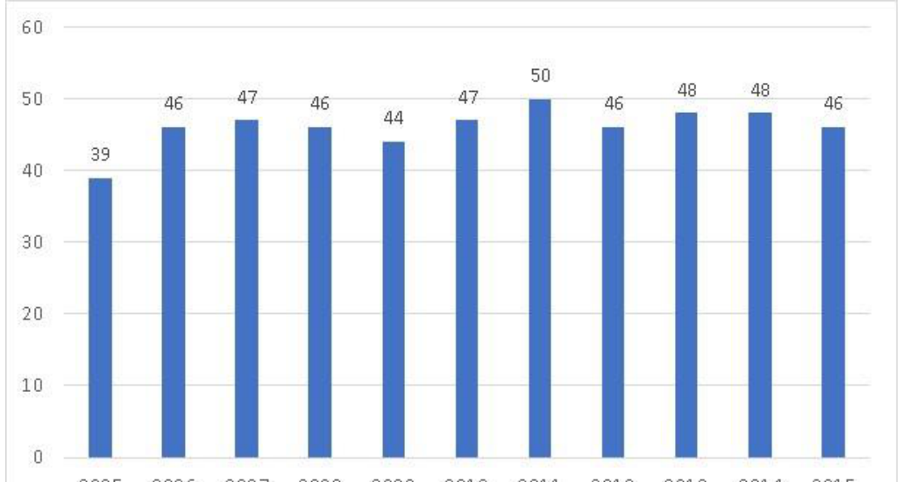
Série anual dos valores médios do IQA reportados pela CETESB entre 2005 e 2015, de 39 a 50 pontos. Todos os anos permanecem dentro da faixa 'regular' (acima de 36 e até 51), sem tendência clara de melhora ou piora ao longo da década.
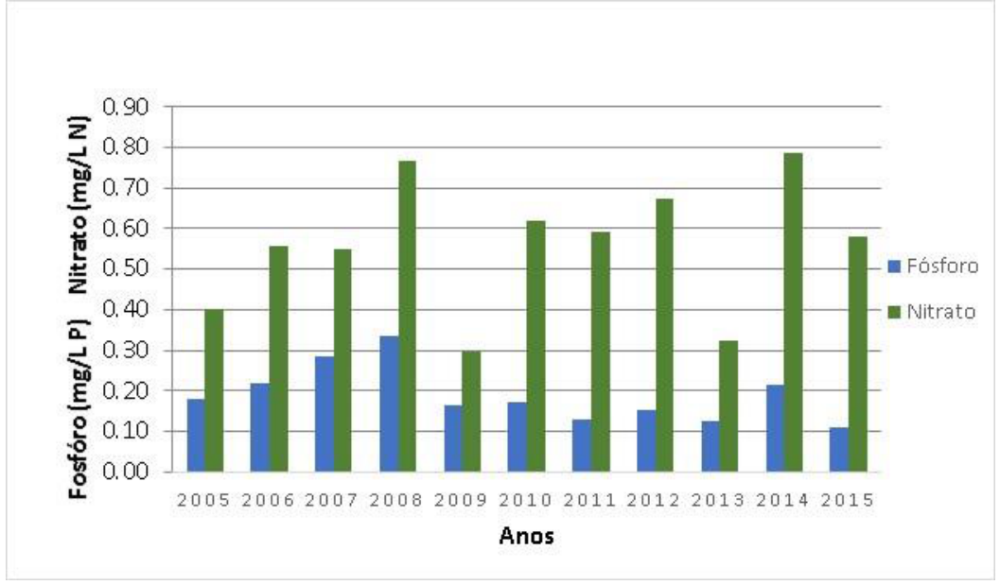
Gráfico de barras com as médias anuais de fósforo total (azul, eixo à esquerda) e nitrato (verde, eixo à direita), em mg/L, entre 2005 e 2015. É a figura que sustenta a conclusão do estudo: o fósforo se mantém elevado ao longo de toda a série, acima do limite legal, indicando aporte contínuo de fontes difusas agrícolas e urbanas e risco de eutrofização do manancial.
Seleção rápida (clique no número para alternar):
Perguntas frequentes sobre este artigo
Clique em uma pergunta para ver a resposta. O conteúdo foi redigido a partir do próprio artigo — números, fórmulas e conclusões vêm do texto publicado.
O que aconteceu com a floresta da bacia em 25 anos?
A área de floresta caiu de 5.580,39 ha em 1991, quando ocupava 57,88% da bacia, para 3.574,66 ha em 2016, ou 37,06%. No mesmo período a agricultura cresceu cerca de 105%, um acréscimo de 1.831,23 ha, tornando-se a segunda maior classe da bacia.
Qual parâmetro de qualidade da água ficou fora do limite?
O fósforo total. Apesar de o Índice de Qualidade da Água (IQA) se manter na faixa regular durante toda a série de 2005 a 2015, o fósforo apresentou valores acima do limite estabelecido pela Resolução CONAMA, o que indica aporte de fontes difusas de poluição e acelera o processo de eutrofização.
De onde vem esse fósforo?
Das atividades que dominam a bacia: agricultura, que responde por cerca de 36% da área e aporta fertilizantes por escoamento difuso, e ocupação urbana sem saneamento adequado. O estudo também pondera que as amostras da CETESB são coletadas no exutório da bacia, onde se acumula a carga de todo o território a montante.
Como o estudo conecta desenvolvimento humano e qualidade da água?
Ele espacializa o IDH por setor censitário e o compara com a dinâmica de uso da terra e com os parâmetros de qualidade da água. A leitura conjunta mostra que a expansão das atividades antrópicas — urbanização em larga escala, ausência de saneamento e supressão de vegetação — é o que exerce maior influência sobre a qualidade do recurso hídrico.
Ligue e desligue camadas no painel à esquerda (os dados carregam sob demanda, sem recarregar a página). Clique em qualquer ponto para consultar os valores das camadas ativas e use Comparar para a cortina 2019 × 2023.
🗺️ Atlas Cartográfico & Figuras Oficiais do Artigo
Abaixo estão reunidos todos os produtos cartográficos e gráficos finalizados que compõem o corpo do manuscrito da APA de Itupararanga:

- Pipeline Espectral: Sentinel-2 L2A (10 m) com cálculo simultâneo de biomassa verde (NDVI) e eficiência fotoquímica do uso da luz (sPRI).
- Achado Central: Persistência de 91,8% da cobertura vegetal total (e 96% da floresta nativa), contrastando com retração de -21,5% nas áreas de alto potencial de fixação de CO₂ (de 200,8 km² para 157,7 km²).
- Simulação 2028: Pelo modelo MOLUSCE / CA-Markov, o alto potencial cai para 145,2 km².
- Validação MODIS GPP: Correlação significante com Produtividade Primária Bruta (r = 0,66 a 0,71; ρ = 0,74 a 0,75; p < 0,001).
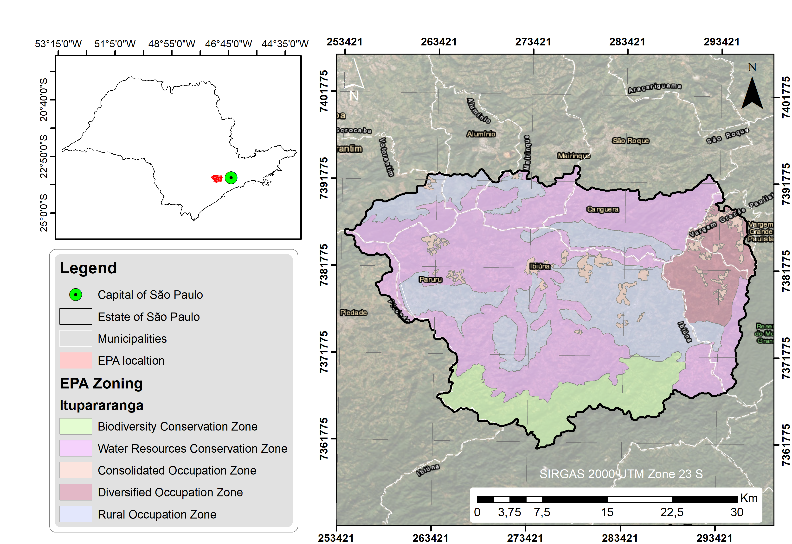
- Enquadramento Geográfico: Localização da APA de Itupararanga (938,31 km²) no contexto do Estado de São Paulo e Região Metropolitana de Sorocaba.
- ZCB (Zona de Conservação da Biodiversidade — verde): remanescentes contínuos mais preservados de Mata Atlântica ao sul da APA.
- ZCRH (Conservação de Recursos Hídricos — roxo): faixa de proteção dos afluentes e do corpo da Represa de Itupararanga.
- ZOR (Ocupação Rural — azul claro): predomínio de agricultura familiar e olericultura.
- ZOD e ZOC: centros urbanos de Ibiúna, São Roque e núcleos consolidados.
Figura 2: Dinâmica Espaço-Temporal de Uso e Cobertura (2019 vs. 2023)

Figura 3: Projeção Preditiva para 2028 (MOLUSCE)
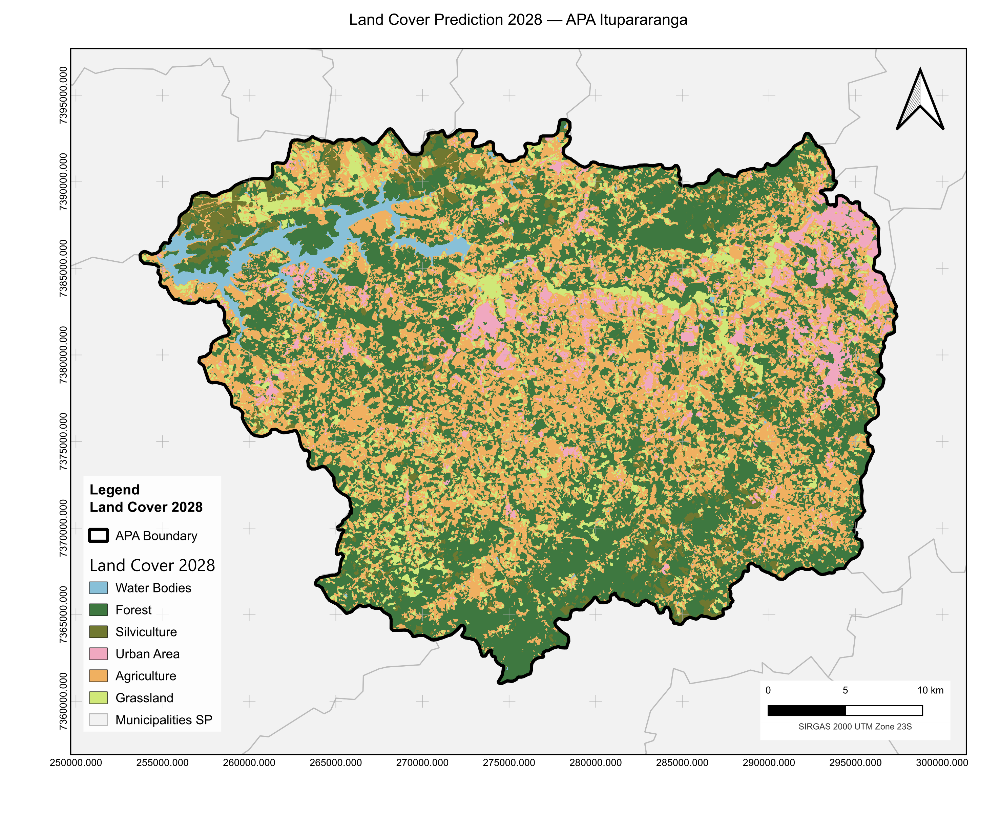
Figura 4: Comparativo Quantitativo de Áreas (km²)

Figura 5: Classes de Potencial de Fluxo de CO₂ (2019 vs. 2023)

Figura 6: Projeção de Fluxo de CO₂ para 2028

Figura 7: Distribuição das Classes de Carbono (km²)

Figura 8: Produtividade Primária Bruta (MODIS GPP 500 m)
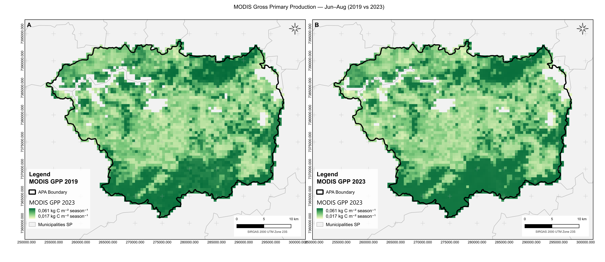
Figura 9: Regressão Estatística & Pureza Vegetal
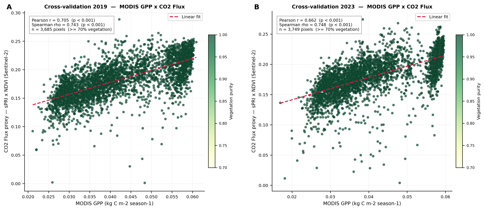
- 2019: Pearson r = 0,705 | Spearman ρ = 0,743 (p < 0,001, n = 3.685 pixels).
- 2023: Pearson r = 0,662 | Spearman ρ = 0,748 (p < 0,001, n = 3.749 pixels).
- O gradiente de cores reflete a pureza vegetal do pixel (≥ 70%), confirmando forte aderência biofísica.
📊 Tabela de Metadados Geoespaciais do Repositório
Camadas vetoriais e matriciais publicadas no WebSIG. O CRS é lido diretamente de cada arquivo original; no mapa, todas são reprojetadas para Web Mercator.
| Camada | Grupo | Arquivo original | Tipo | CRS original (lido do arquivo) | Resolução original | Fonte primária | Descrição |
|---|---|---|---|---|---|---|---|
| Limite oficial da APA | Limites & zoneamento | EPA_Boundary_SIRGAS_UTM.shp | Vetor (Polygon) | SIRGAS 2000 / UTM zone 23S (EPSG:31983) | vetorial | Fundação Florestal / SEMIL-SP | Perímetro legal da APA de Itupararanga (938,31 km²), Lei Estadual nº 10.100/1998. |
| Zoneamento do Plano de Manejo | Limites & zoneamento | EPA_Zones_SIRGAS_UTM.shp | Vetor (Polygon) | WGS 84 (EPSG:4326) | vetorial | Plano de Manejo da APA de Itupararanga | Cinco zonas de gestão (ZCB, ZCRH, ZOR, ZOD e ZOC), dissolvidas por zona. |
| Municípios da APA | Limites & zoneamento | Municipalities_SaoPaulo_2010.shp | Vetor (Polygon) | WGS 84 (EPSG:4326) | vetorial | IBGE — malha municipal e Censo 2010 | Municípios com mais de 1 km² dentro da APA, com área abrangida e dados do Censo 2010. |
| Estado de São Paulo | Limites & zoneamento | SaoPaulo_State_SIRGAS_UTM.shp | Vetor (MultiPolygon) | WGS 84 (EPSG:4326) | vetorial | IBGE | Contorno estadual para contexto regional. |
| Cobertura da terra 2019 | Cobertura e uso da terra | LC_2019_SIRGAS_UTM.tif | Raster (temático · uint8) | SIRGAS 2000 / UTM zone 23S (EPSG:31983) | 10 m | MapBiomas Coleção 10 m (beta, Sentinel-2) reclassificado | Cobertura e uso da terra em 2019, reclassificada em 6 classes. |
| Cobertura da terra 2023 | Cobertura e uso da terra | LC_2023_SIRGAS_UTM.tif | Raster (temático · uint8) | SIRGAS 2000 / UTM zone 23S (EPSG:31983) | 10 m | MapBiomas Coleção 10 m (beta, Sentinel-2) reclassificado | Cobertura e uso da terra em 2023, reclassificada em 6 classes. |
| Cobertura da terra 2028 (projeção) | Cobertura e uso da terra | LC_2028_SIRGAS_UTM.tif | Raster (temático · int16) | SIRGAS 2000 / UTM zone 23S (EPSG:31983) | 10 m | Simulação MOLUSCE (ANN-MLP + CA-Markov) · QGIS | Cenário projetado de cobertura da terra para 2028. |
| Classes de CO₂ 2019 | Potencial de fluxo de CO₂ (classes) | CO2Flux_Classified_2019_SIRGAS_UTM.tif | Raster (temático · float32) | WGS 84 / UTM zone 23S (EPSG:32723) | 10 m | Sentinel-2 MSI L2A (ESA/Copernicus) · processamento dos autores | Classes do proxy sPRI × NDVI em 2019 (5 classes de potencial). |
| Classes de CO₂ 2023 | Potencial de fluxo de CO₂ (classes) | CO2Flux_Classified_2023_SIRGAS_UTM.tif | Raster (temático · float32) | WGS 84 / UTM zone 22S (EPSG:32722) | 10 m | Sentinel-2 MSI L2A (ESA/Copernicus) · processamento dos autores | Classes do proxy sPRI × NDVI em 2023 (5 classes de potencial). |
| Classes de CO₂ 2028 (projeção) | Potencial de fluxo de CO₂ (classes) | CO2Flux_Classified_2028_SIRGAS_UTM.tif | Raster (temático · int16) | SIRGAS 2000 / UTM zone 23S (EPSG:31983) | 10 m | Simulação MOLUSCE sobre as classes de CO₂ | Cenário projetado das classes de potencial de fluxo de CO₂ para 2028. |
| Contorno florestal 2019 | Manchas florestais (vetor) | Natural_Areas_CO2Potential_2019.shp | Vetor (MultiPolygon) | SIRGAS 2000 / UTM zone 23S (EPSG:31983) | vetorial | Sentinel-2 MSI L2A (ESA/Copernicus) · processamento dos autores | Contorno das manchas de floresta nativa (2019) usadas na análise de CO₂. Simplificado a 15 m; manchas e clareiras menores que 2 ha omitidas. |
| Contorno florestal 2023 | Manchas florestais (vetor) | Natural_Areas_CO2Potential_2023.shp | Vetor (MultiPolygon) | SIRGAS 2000 / UTM zone 23S (EPSG:31983) | vetorial | Sentinel-2 MSI L2A (ESA/Copernicus) · processamento dos autores | Contorno das manchas de floresta nativa (2023) usadas na análise de CO₂. Simplificado a 15 m; manchas e clareiras menores que 2 ha omitidas. |
| sPRI × NDVI 2019 | Proxy contínuo sPRI × NDVI | CO2Flux_2019_SIRGAS_UTM.tif | Raster (contínuo · float32) | WGS 84 / UTM zone 23S (EPSG:32723) | 10 m | Sentinel-2 MSI L2A (ESA/Copernicus) · processamento dos autores | Proxy espectral relativo do potencial de sequestro de CO₂ (2019). |
| sPRI × NDVI 2023 | Proxy contínuo sPRI × NDVI | CO2Flux_2023_SIRGAS_UTM.tif | Raster (contínuo · float32) | WGS 84 / UTM zone 22S (EPSG:32722) | 10 m | Sentinel-2 MSI L2A (ESA/Copernicus) · processamento dos autores | Proxy espectral relativo do potencial de sequestro de CO₂ (2023). |
| NDVI 2019 | Índices espectrais | NDVI_2019_SIRGAS_UTM.tif | Raster (contínuo · float32) | WGS 84 / UTM zone 23S (EPSG:32723) | 10 m | Sentinel-2 MSI L2A (ESA/Copernicus) · processamento dos autores | NDVI = (B08 − B04) / (B08 + B04), inverno seco de 2019. |
| NDVI 2023 | Índices espectrais | NDVI_2023_SIRGAS_UTM.tif | Raster (contínuo · float32) | WGS 84 / UTM zone 22S (EPSG:32722) | 10 m | Sentinel-2 MSI L2A (ESA/Copernicus) · processamento dos autores | NDVI = (B08 − B04) / (B08 + B04), inverno seco de 2023. |
| sPRI 2019 | Índices espectrais | sPRI_2019_SIRGAS_UTM.tif | Raster (contínuo · float32) | WGS 84 / UTM zone 23S (EPSG:32723) | 10 m | Sentinel-2 MSI L2A (ESA/Copernicus) · processamento dos autores | sPRI = (PRI + 1) / 2, com PRI = (B02 − B03) / (B02 + B03), 2019. |
| sPRI 2023 | Índices espectrais | sPRI_2023_SIRGAS_UTM.tif | Raster (contínuo · float32) | WGS 84 / UTM zone 22S (EPSG:32722) | 10 m | Sentinel-2 MSI L2A (ESA/Copernicus) · processamento dos autores | sPRI = (PRI + 1) / 2, com PRI = (B02 − B03) / (B02 + B03), 2023. |
| MODIS GPP jun–ago 2019 | Validação MODIS GPP (500 m) | MODIS_GPP_2019_JunAug_APA.tif | Raster (contínuo · float64) | SIRGAS 2000 / UTM zone 23S (EPSG:31983) | 500 m | NASA LP DAAC — MOD17A2H (Google Earth Engine) | Produtividade Primária Bruta acumulada no inverno de 2019, referência independente para validar o proxy. |
| MODIS GPP jun–ago 2023 | Validação MODIS GPP (500 m) | MODIS_GPP_2023_JunAug_APA.tif | Raster (contínuo · float64) | SIRGAS 2000 / UTM zone 23S (EPSG:31983) | 500 m | NASA LP DAAC — MOD17A2H (Google Earth Engine) | Produtividade Primária Bruta acumulada no inverno de 2023, referência independente para validar o proxy. |
Como o manuscrito científico principal encontra-se em fase final de publicação (pós-revisão por pares), utilize a referência bibliográfica e o identificador digital provisório abaixo para citação e reprodutibilidade do conjunto de dados geoespaciais:
🌳 Forest Lab — Simulador 3D de Crescimento Florestal, Sucessão Ecológica e Interferência Antrópica
Mil anos de sucessão florestal tropical em 100 hectares (1.000 m × 1.000 m), calculados e desenhados em tempo real dentro do navegador. O simulador compara uma borda ripária natural com duas bordas antrópicas — vinhedo/agricultura e expansão urbana — e permite explorar a estrutura da floresta com uma nuvem de pontos LiDAR aerotransportada emulada.
O simulador é interativo: arraste para girar a câmera, use a roda do mouse para aproximar e a barra inferior para percorrer os 1.000 anos. Toda a simulação roda localmente, no seu computador — nenhum dado é coletado ou enviado. A primeira carga busca three.js e Tailwind em CDN público e exige WebGL; o cálculo completo da história de 1.000 anos leva cerca de 0,6–0,7 s. O botão ❓ Ajuda dentro do simulador traz o guia completo, e o tópico 7 lista todas as referências. Para abrir apenas o simulador, sem o portfólio em volta, use jomilc.github.io/portifolio/forest_lab/.
O que o simulador faz
Um modelo de clareira baseado em indivíduos e dirigido pela luz, no espírito do JABOWA (Botkin et al., 1972) e do FORMIND (Köhler & Huth, 1998). Os 3.300 pontos da paisagem são sítios, e cada sítio é ocupado por gerações sucessivas de qualquer grupo funcional.
- Cinco fases de sucessão (anos 0–1.000): gramíneas rasteiras iniciais (0–3); expansão herbácea e pioneira (3–15); floresta secundária e sub-bosque (15–60); floresta secundária tardia/clímax (60–150); floresta madura com megaárvores emergentes (150+).
- Sete grupos funcionais que se substituem conforme a luz que chega a cada sítio. Árvores mortas não voltam: o sítio é recolonizado por plantas novas, na ordem sucessional.
- Efeitos de borda: rio meandrante com mata de galeria (borda natural, cerca de −7% de biomassa); vinhedo/agricultura a oeste (cerca de −24% na zona de contato); expansão urbana a leste (cerca de −48% na zona de contato). As bordas reduzem o crescimento e elevam a mortalidade de árvores grandes (Laurance et al., 2002).
- Dinâmica de clareiras: quedas naturais de árvores grandes esmagam vizinhas menores e abrem o dossel. Há ainda uma ferramenta para abrir uma clareira numa emergente e acompanhar a recuperação — ao derrubar a árvore, um bando de araras-azuis e vermelhas abandona a copa, lembrete visual da perda de hábitat e biodiversidade.
- Detalhe da zona urbana: ao ligar a expansão urbana, a cidade sobe em animação, com malha viária e faixas de pedestres, edifícios com janelas acesas, casas de telhado de duas águas e uma fábrica cuja fumaça deriva com o vento. São elementos visuais; o cálculo do efeito de borda é o mesmo.
- Modo Nuvem LiDAR: varredura aerotransportada emulada de alta densidade (cerca de 420.000 retornos), colorível por espécie e fuste, por altura (Z) ou por solo/vegetação. É uma emulação simplificada em navegador, inspirada na abordagem de varredura a laser virtual do HELIOS++ (Winiwarter et al., 2022) — não executa o HELIOS++.
- Precipitação
- Fertilidade do solo
- Taxa de clareiras
- Densidade foliar
- Pulso de chuva de 6 s, com formação de nuvens e ganho modesto de crescimento
- Evolução de cada grupo ao longo de 1.000 anos
- Crescimento diamétrico (cm/ano) e mortalidade (%/ano) por grupo, com média móvel de 15 anos
- Cobertura de dossel, a partir do modelo de luz
- Perfil vertical LiDAR e altura máxima
- Biomassa acima do solo (AGB, Mg/ha) pela alometria pantropical de Chave et al. (2014)
- Isométrica, nadir (ALS), borda urbana, borda rural, corredor ripário e sub-bosque
Registros da simulação
Capturas da versão 1.0.0, depositada no Zenodo.
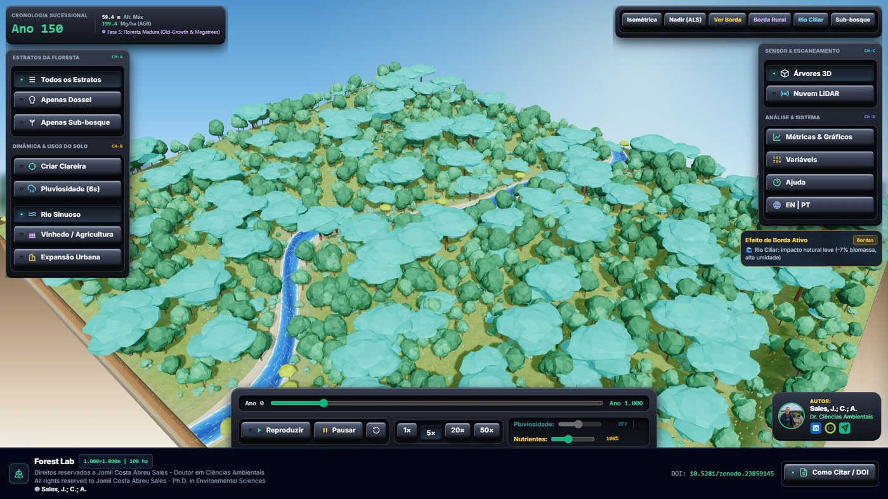
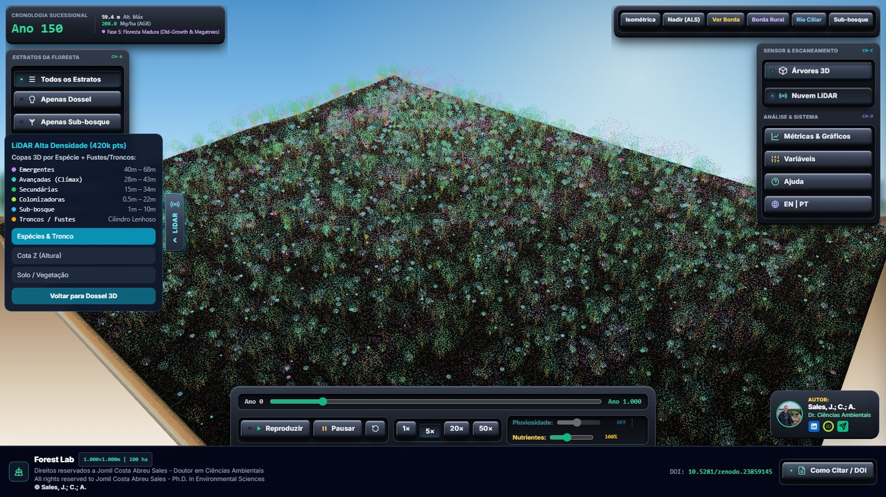
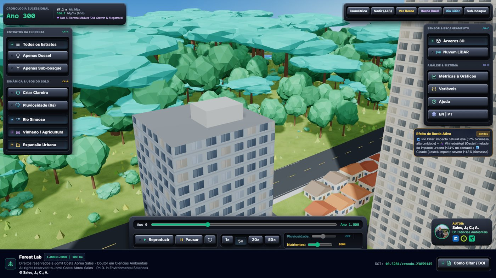
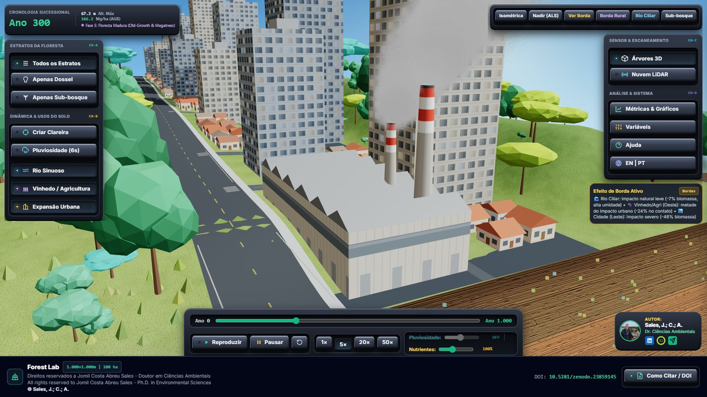
Modelo de crescimento
Luz, recrutamento e os sete grupos funcionais
Luz. A área foliar de cada copa é distribuída sobre uma grade de 40 m e em camadas de 5 m de
altura, da base da copa até o topo. A luz abaixo de uma dada altura segue a lei de Lambert–Beer,
L = exp(−k · IAF acima), com k = 0,5 (Monsi & Saeki, 1953/2005). No
chão da floresta madura a luz cai para cerca de 3%.
Recrutamento. Um sítio vazio é recolonizado conforme a luz que chega ao solo (facilitação e tolerância; Connell & Slatyer, 1977). Seguindo o padrão de "composição florística inicial" (Finegan, 1996), árvores de estágios mais tardios podem se estabelecer entre as pioneiras já nos primeiros anos, mas crescem devagar enquanto sombreadas.
| # | Grupo (gêneros de exemplo) | Entra em | Luz no solo | Longevidade (anos) | Altura máx. (m) | Densidade da madeira (g/cm³) |
|---|---|---|---|---|---|---|
| 1 | Pioneiras (gramíneas, Cecropia, Trema) | ano 0 (banco de sementes) | ≥ 28% | 15–35 | 20 | 0,35 |
| 2 | Arbustos pioneiros (Piper, Miconia, Vismia) | ano 2 | ≥ 15% | 15–40 | 6 | 0,40 |
| 3 | Secundárias iniciais (Inga, Schizolobium) | ano 3 | ≥ 12% | 40–80 | 26 | 0,52 |
| 4 | Secundárias tardias (Cedrela, Virola) | ano 4 | qualquer | 100–220 | 34 | 0,65 |
| 5 | Clímax (Carapa, Manilkara, Hymenaea) | ano 5 | qualquer | 300–600 | 43 | 0,80 |
| 6 | Arvoretas e palmeiras tolerantes à sombra (Euterpe, Geonoma) | ano 10 | ≤ 30% | 70–140 | 10 | 0,45 |
| 7 | Emergentes (Bertholletia, Dinizia, Cariniana) | ano 12 | qualquer | 500–900 | 68 | 0,72 |
Agrupamento segundo Budowski (1965), Finegan (1996) e Chazdon (2014). Cada sítio tem um grupo "de origem" — o pool de espécies da paisagem — e é recolonizado sobretudo por ele, com chance menor para os demais (chuva de sementes). Numa clareira dentro da floresta (solo iluminado, entorno sombreado), o sol direto quebra a dormência do banco de sementes do solo e pioneiras podem germinar em qualquer sítio, produzindo o pulso de colonizadoras (Finegan, 1996; Denslow, 1987).
Crescimento, persistência das pioneiras e sub-bosque sob as emergentes
Crescimento. A altura cresce rumo ao máximo do grupo (curva monomolecular). O crescimento desacelera sob a sombra de árvores mais altas (supressão) e com solo pobre ou estresse de borda. O raio da copa segue a altura alometricamente. Alturas nunca diminuem.
Pioneiras e arbustos persistem a pleno sol. Enquanto uma pioneira ou arbusto pioneiro recebe ao menos 70% da luz plena no topo, ela não morre por senescência, mortalidade de fundo ou estresse de borda. Ela desaparece apenas quando árvores mais altas começam a sombreá-la. As únicas exceções são a destruição física: uma árvore grande caindo sobre ela, uma clareira aberta pelo usuário, ou a conversão do terreno em cidade ou agricultura. Na execução padrão, nenhuma das mortes de pioneiras ou arbustos ao longo de 1.000 anos acontece a pleno sol. O povoamento pioneiro começa a declinar por volta dos 20–25 anos, quando as secundárias iniciais o ultrapassam em altura, e quase desaparece aos 150 anos — sobrevivendo então só em clareiras e ao longo das bordas, como descrito por Denslow (1987) e Laurance et al. (2002).
Sub-bosque sob as emergentes. A sombra profunda e úmida sob copas emergentes grandes (> 45 m) é o melhor hábitat para arvoretas e palmeiras tolerantes à sombra. Sob essas copas elas se estabelecem três vezes mais rápido e morrem cerca de três vezes menos. Cerca de 90 sítios exclusivos de sub-bosque ficam próximos às emergentes. O resultado: o sub-bosque maduro (anos 300–1.000) abriga cerca de 890 plantas em vez de cerca de 700 (+25%), com aproximadamente o dobro de plantas sob cada emergente grande. Ele também é mais estável — cerca de 1,6% das plantas são substituídas por ano, e a variação de um ano para o outro fica em torno de 0,5%.
Mortalidade, biomassa e calibração
Mortalidade (demais casos).
- Mortalidade de fundo de 0,4–4% ao ano, conforme o grupo e escalonada pelo controle de "taxa de clareiras". Florestas tropicais renovam-se a cerca de 1–2% ao ano (Phillips & Gentry, 1994).
- Senescência ao fim da longevidade sorteada.
- Sombreamento dos grupos exigentes de luz, que produz autodesbaste.
- Fotoinibição de arvoretas tolerantes à sombra em clareiras grandes (Denslow, 1987).
- Mortalidade adicional perto das bordas.
- Esmagamento de vizinhas menores quando uma árvore grande cai.
Biomassa. Cada sítio representa uma coorte de árvores reais do seu grupo. A AGB usa a alometria pantropical de Chave et al. (2014), com o diâmetro estimado a partir do raio da copa.
Calibração. A execução padrão alcança cerca de 85 Mg/ha aos 60 anos, 135 Mg/ha aos 100 anos e 210 Mg/ha aos 150 anos; cerca de 260–290 Mg/ha na floresta madura; altura de dossel de cerca de 32 m aos 60 anos e emergentes de 68 m após cerca de 400 anos. Esses valores estão dentro das faixas relatadas para florestas secundárias e maduras neotropicais (Chave et al., 2014; Poorter et al., 2016). As intensidades de borda foram calibradas para que as zonas de contato percam cerca de 48% (cidade), 25% (vinhedo) e 7% (rio) da sua biomassa.
Reprodutibilidade. Todos os sorteios aleatórios vêm de um hash de semente fixa, e as intensidades de borda foram calibradas na média de 4 sementes independentes. A história inteira de 1.000 anos é calculada de uma vez e recalculada quando o cenário muda — mover a linha do tempo para frente e para trás sempre mostra a mesma floresta.
Requisitos, execução e importação de dados
- Conexão de internet na primeira carga. A página busca three.js r128 e Tailwind CSS 3.4.17 em CDNs públicos (cdnjs, jsDelivr e cdn.tailwindcss.com).
- GPU dedicada ou integrada recente é recomendada. O renderizador reduz a resolução automaticamente em máquinas mais lentas.
- Funciona em computadores e celulares. Em telas pequenas o layout se adapta: um menu compacto de ícones ☰ agrupa todos os controles, a barra de reprodução encolhe para a linha do tempo durante a simulação e os avisos de efeito de borda ficam numa aba ⓘ arrastável. Orientação paisagem é recomendada; em dispositivos de toque a qualidade gráfica é reduzida automaticamente para manter a animação fluida.
- Importação de dados. Um arquivo JSON com posições e dimensões de árvores
(
dados_floresta_1000anos.json, por exemplo exportado de um fluxo em Google Colab) pode substituir o modelo de sucessão embutido. - Sem instalação, servidor ou conta. Toda a simulação roda localmente no navegador e nenhum dado é coletado ou enviado.
Bibliotecas e referência conceitual
- three.js r128 — biblioteca de renderização 3D, licença MIT.
threejs.org - Tailwind CSS 3.4.17 — estilização da interface, licença MIT.
tailwindcss.com - HELIOS++ — Heidelberg LiDAR Operations Simulator, 3DGeo Research Group, Universidade de Heidelberg. Serviu como referência conceitual para o modo Nuvem LiDAR; não é embutido nem executado.
Referências científicas (15)
- Botkin, D. B., Janak, J. F., & Wallis, J. R. (1972). Some ecological consequences of a computer model of forest growth. Journal of Ecology, 60(3), 849–872.
- Budowski, G. (1965). Distribution of tropical American rain forest species in the light of successional processes. Turrialba, 15(1), 40–42.
- Chave, J., Réjou-Méchain, M., Búrquez, A., et al. (2014). Improved allometric models to estimate the aboveground biomass of tropical trees. Global Change Biology, 20(10), 3177–3190.
- Chazdon, R. L. (2014). Second growth: The promise of tropical forest regeneration in an age of deforestation. University of Chicago Press.
- Connell, J. H., & Slatyer, R. O. (1977). Mechanisms of succession in natural communities and their role in community stability and organization. The American Naturalist, 111(982), 1119–1144.
- Denslow, J. S. (1987). Tropical rainforest gaps and tree species diversity. Annual Review of Ecology and Systematics, 18, 431–451.
- Finegan, B. (1996). Pattern and process in neotropical secondary rain forests: The first 100 years of succession. Trends in Ecology & Evolution, 11(3), 119–124.
- Guariguata, M. R., & Ostertag, R. (2001). Neotropical secondary forest succession: Changes in structural and functional characteristics. Forest Ecology and Management, 148(1–3), 185–206.
- Köhler, P., & Huth, A. (1998). The effects of tree species grouping in tropical rainforest modelling: Simulations with the individual-based model FORMIND. Ecological Modelling, 109(3), 301–321.
- Laurance, W. F., Lovejoy, T. E., Vasconcelos, H. L., et al. (2002). Ecosystem decay of Amazonian forest fragments: A 22-year investigation. Conservation Biology, 16(3), 605–618.
- Monsi, M., & Saeki, T. (2005). On the factor light in plant communities and its importance for matter production (original de 1953). Annals of Botany, 95(3), 549–567.
- Naiman, R. J., Décamps, H., & McClain, M. E. (2005). Riparia: Ecology, conservation, and management of streamside communities. Elsevier Academic Press.
- Phillips, O. L., & Gentry, A. H. (1994). Increasing turnover through time in tropical forests. Science, 263(5149), 954–958.
- Poorter, L., Bongers, F., Aide, T. M., et al. (2016). Biomass resilience of Neotropical secondary forests. Nature, 530(7589), 211–214.
- Winiwarter, L., Esmorís Pena, A. M., Weiser, H., et al. (2022). Virtual laser scanning with HELIOS++: A novel take on ray tracing-based simulation of topographic full-waveform 3D laser scanning. Remote Sensing of Environment, 269, 112772.
Versão 1.0.0 · Zenodo, 2026 · Metadados
legíveis por máquina em CITATION.cff.
© 2026 Jomil Costa Abreu Sales. Todos os
direitos reservados. Visualização e uso acadêmico não comercial com citação são permitidos; ver
LICENSE.txt. Bibliotecas de terceiros permanecem sob as suas próprias licenças.
🧠 Agentes Inteligentes & RAG Especializado em Literatura Científica
Sistemas de Recuperação Aumentada por Geração (Retrieval-Augmented Generation) projetados para superar as limitações de LLMs genéricos no meio acadêmico e ambiental:
- Rigor Técnico contra Alucinações: o agente é ancorado estritamente em papers, teses, relatórios de EIA/RIMA e matrizes de satélite, garantindo que valores numéricos, datas e fórmulas sejam reproduzidos com precisão.
- Interpretação Multiespectral: capaz de explicar fórmulas de sensoriamento remoto
(como
sPRI × NDVI), correlações estatísticas (Pearson, Spearman) e bandas orbitais (Sentinel-2, MODIS). - Aplicação no Portfólio: na seção Artigos Científicos, cada estudo traz um bloco de perguntas frequentes com respostas redigidas a partir do próprio artigo — os números, fórmulas e conclusões vêm do texto publicado, sem geração automática.
- Python 3.10+ / Streamlit
- LangChain / LlamaIndex architecture
- Embeddings vetoriais multilingues
- API Google Gemini integrada
- Base de conhecimento pós-revisão por pares
🔮 Modelagem Preditiva com Redes Neurais Artificiais (MOLUSCE / ANN-MLP)
Simulação espaço-temporal de mudanças de uso da terra e perdas funcionais de carbono através de inteligência artificial geoespacial:
- Arquitetura Neural ANN-MLP: treinamento de Redes Neurais Artificiais do tipo Multi-Layer Perceptron com 10.000 amostras aleatórias e 500 épocas de calibração, usando variáveis preditoras como declividade, distância de estradas e núcleos urbanos.
- Autômatos Celulares e Cadeias de Markov (CA-Markov): projeção preditiva probabilística de transição de classes para o horizonte de 2028 na APA de Itupararanga.
- Diferencial Competitivo: permite que empresas de créditos de carbono e órgãos de fiscalização ambiental antecipem áreas de degradação florestal futura antes que o corte raso ocorra.
⚖️ Sistemas de Apoio à Decisão com Lógica Difusa e OWA
Algoritmos de inteligência computacional para ponderação de políticas públicas fiscais e ambientais:
- Modelagem Multicritério OWA: operadores de média ponderada ordenada aplicados ao Índice de Vegetação Nativa (IVEG) para simular diferentes graus de atitude decisória (tolerância ao risco e trade-offs compensatórios).
- Aplicação no ICMS Ecológico: calibração algorítmica para os 645 municípios de São Paulo, permitindo ao poder público alinhar transferências financeiras à preservação ecossistêmica de alta integridade.
- Reconhecimento Internacional: metodologia apresentada no 21st Symposium on Systems Analysis in Forest Resources (SSAFR 2026, San Sebastián, Espanha).
🛰️ Automação de Sensoriamento Remoto em Nuvem (GEE & Python)
Pipelines automatizados de processamento massivo de imagens de satélite:
- Scripts GEE Especializados: rotinas para filtragem automática de nuvens (QA60 Sentinel-2), mosaicos temporais sazonais e harmonização espectral.
- Validação Cruzada Multi-Sensor: cruzamento em nuvem entre índices de alta resolução espacial (Sentinel-2, 10 m) e dados biofísicos globais (MODIS GPP MOD17A2H, 500 m).
- Reprodutibilidade Científica: código documentado segundo as melhores práticas de Ciência Aberta e princípios FAIR.
💡 Meus Produtos, Modelos & Inovações em Construção
Ferramentas sob medida desenvolvidas pelo Dr. Jomil:
Aplicação para identificar talhões de floresta sob estresse hídrico e perda de capacidade fotossintética antes do aparecimento de clareiras.
Software interativo para simulação de cenários de repasse de ICMS Ambiental com controle de atitude de risco pelo gestor público.
Aulas e Tutoria em Geoprocessamento & Sensoriamento Remoto
Mentoria personalizada e treinamentos práticos (do básico ao avançado) com estudos de caso reais do mercado ambiental:
Plataformas & Softwares Dominados:
- QGIS: manipulação vetorial e raster, georreferenciamento, modelagem no MOLUSCE, layout cartográfico profissional para órgãos ambientais.
- ArcGIS Pro / ArcMap: análise espacial multicritério (AHP), modelagem hidrológica, interpolação geoestatística (Krigagem).
- Google Earth Engine: processamento massivo em nuvem de coleções Sentinel-2, Landsat (séries de 30 anos) e MODIS.
- IDRISI / TerrSet: Cadeias de Markov e Autômatos Celulares para projeção de mudanças de uso da terra e vulnerabilidade.
- Programação Aplicada: Python (GeoPandas, Shapely, Rasterio) e R (sf, lidR para nuvens LiDAR).
Módulos Práticos & Objetivos:
- Elaboração de mapas temáticos padronizados para licenciamento junto à CETESB e ao IBAMA.
- Cálculo de índices biofísicos: NDVI, sPRI, EVI, NBR (cicatrizes de fogo) e temperatura de superfície (LST).
- Quantificação e modelagem do fluxo e estoque de carbono para projetos ESG e mercado voluntário.
- Delimitação automatizada de APPs hídricas e de topo de morro segundo a Lei 12.651/2012.
Estudos e Avaliações de Impacto Ambiental (Diagnósticos)
Elaboração, coordenação técnica e perícia em diagnósticos ambientais de todas as complexidades:
AIA (Avaliação de Impacto Ambiental)
O processo geral e estruturante de identificar, prever e interpretar as consequências que um empreendimento trará aos meios físico, biótico e socioeconômico. É o ponto de partida técnico de qualquer estudo.
EIA (Estudo de Impacto Ambiental)
O estudo técnico e científico mais complexo e aprofundado do mercado. Exigido obrigatoriamente para grandes obras de significativo impacto (hidrelétricas, rodovias, mineradoras, portos), detalhando fauna, flora, dinâmica do solo e impactos sociais.
RIMA (Relatório de Impacto Ambiental)
O resumo executivo do EIA elaborado em linguagem clara, visual e acessível, com infográficos e mapas, obrigatório para apresentação pública à sociedade e em audiências públicas.
EAS (Estudo Ambiental Simplificado)
Estudo técnico de menor complexidade exigido para empreendimentos cujo potencial de poluição ou degradação ambiental é considerado de baixo ou médio impacto.
RAS (Relatório Ambiental Simplificado)
Análise rápida e objetiva das condições ambientais da região antes da implantação de empresas de pequeno ou médio porte (por exemplo, loteamentos residenciais compactos e indústrias leves).
PCA (Plano de Controle Ambiental)
Documento contratado na fase de instalação que detalha as medidas e planos executivos da empresa para mitigar, monitorar e controlar efluentes, resíduos e poluição gerada.
Licenciamento Ambiental (Etapas Obrigatórias)
Condução e instrução de processos regulatórios junto aos órgãos de fiscalização (CETESB, IBAMA e secretarias municipais):
LP (Licença Prévia)
O primeiro selo de aprovação governamental, que atesta a viabilidade ambiental da localização e da concepção do projeto.
LI (Licença de Instalação)
Autoriza o início físico das obras civis, terraplanagem e montagem da estrutura, condicionada ao cumprimento das exigências da LP.
LO (Licença de Operação)
A licença definitiva que autoriza o negócio a iniciar suas atividades produtivas, mediante comprovação técnica do cumprimento das etapas anteriores.
LAS (Licenciamento Ambiental Simplificado)
Processo unificado e ágil em que LP, LI e LO são avaliadas em uma única etapa, para empreendimentos de baixíssimo potencial poluidor.
ASV (Autorização de Supressão de Vegetação)
Documento legal emitido pelo órgão ambiental competente autorizando o corte criterioso de exemplares arbóreos nativos para implantação da obra.
Restauração e Recuperação Ecológica
Projetos técnicos com metodologia científica para recomposição de ecossistemas degradados:
PRAD (Plano de Recuperação de Áreas Degradadas)
Projeto técnico e executivo que define como reverter a degradação do solo, conter processos erosivos e restabelecer a vegetação nativa com bioengenharia e plantio de mudas pioneiras e secundárias.
PRADA (Plano de Recuperação de Áreas Degradadas ou Alteradas)
Equivalente ao PRAD, estruturado sob os parâmetros específicos do Código Florestal para regularização de imóveis e propriedades rurais.
PTRF (Projeto de Recomposição da Flora)
Plano focado no plantio, adensamento, enriquecimento e manejo silvicultural de espécies nativas regionais para restauração de áreas abertas ou sub-bosques.
Regularização Rural (Código Florestal — Lei nº 12.651/2012)
Adequação ambiental completa de propriedades e empreendimentos do agronegócio:
APP (Área de Preservação Permanente)
Faixas marginais de cursos d'água, nascentes, topos de morro e encostas íngremes protegidas por lei. Atuação na delimitação precisa em SIG e no projeto de regeneração.
RL (Reserva Legal)
Percentual territorial obrigatório de cobertura florestal nativa que cada imóvel rural deve preservar: cálculo da área, demarcação no mapa e projeto de compensações quando cabível.
CAR (Cadastro Ambiental Rural)
Registro público eletrônico obrigatório para todos os imóveis rurais do Brasil, com elaboração de shapefiles georreferenciados do mosaico da propriedade.
PRA (Programa de Regularização Ambiental)
Termo de compromisso firmado junto ao órgão ambiental estadual para sanar passivos de APP e Reserva Legal, implementando os planos desenhados pelo consultor.
Fiscalização, Multas e Acordos Legais
TAC (Termo de Ajustamento de Conduta)
Acordo jurídico extrajudicial firmado entre a empresa ou proprietário autuado, o órgão ambiental fiscalizador (CETESB/IBAMA) e o Ministério Público. O consultor realiza a perícia forense, quantifica o dano real com imagens históricas de satélite e desenha as soluções técnicas executivas (cronogramas de recuperação e compensações) necessárias para suspender multas e evitar ações civis públicas.
Solicitar Proposta Técnica ou Agendar Tutoria
Precisa de assessoria técnica especializada para o seu empreendimento, estudo de caso ou treinamento em SIG?
- E-mail Institucional:
jomil.sales@usp.br - E-mail Profissional:
jomilc@gmail.com - Registro Profissional: Biólogo CRBio nº 68816/01-D
Duas décadas entre a floresta, o mapa e a sala de aula
Da graduação em Ciências Biológicas ao pós-doutorado em Ciências Florestais na ESALQ/USP, passando pelo licenciamento ambiental, pela docência universitária e pela pesquisa em sensoriamento remoto na Alemanha.
Formação & atuação em linha do tempo
Percurso acadêmico e profissional, do primeiro diploma à pesquisa atual.
Áreas de atuação profissional
Passe o mouse sobre cada imagem (ou toque, no celular) para ver o que envolve cada frente de trabalho.
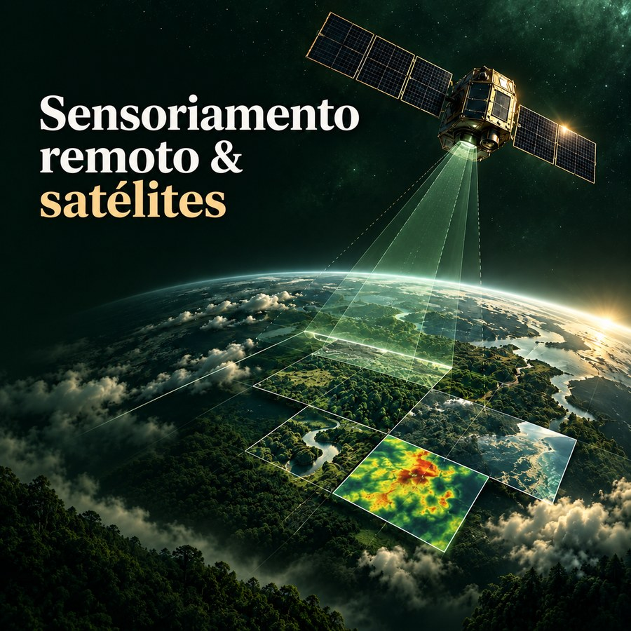
Séries Sentinel-2, Landsat e MODIS processadas em nuvem (Google Earth Engine) para detectar mudança de cobertura, estresse hídrico e perda de vigor fotossintético antes que virem desmatamento.
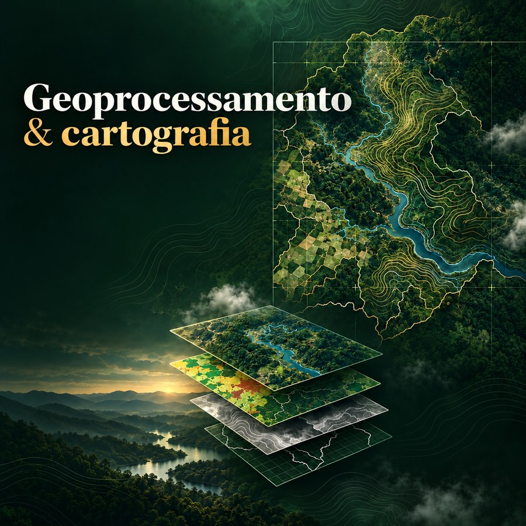
Mapeamento e análise espacial em QGIS e ArcGIS: delimitação de APPs e Reserva Legal, geoestatística, modelagem multicritério (AHP e OWA) e produção cartográfica para órgãos ambientais.
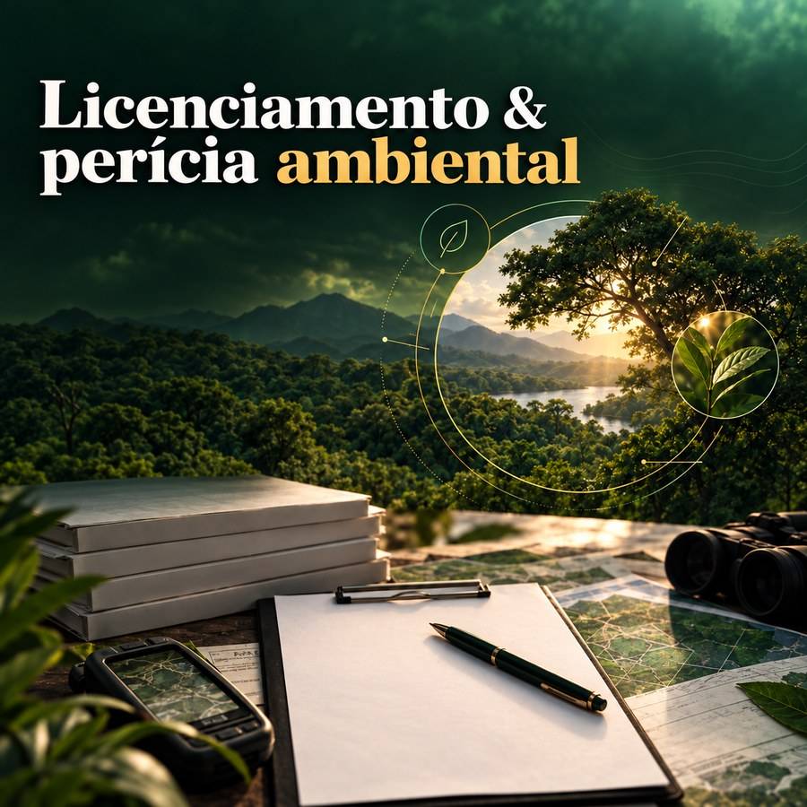
EIA/RIMA, RAP, PRAD e laudos de cobertura vegetal; vistorias de passivos ambientais, apoio técnico a Termos de Ajustamento de Conduta e acompanhamento de autos de infração.
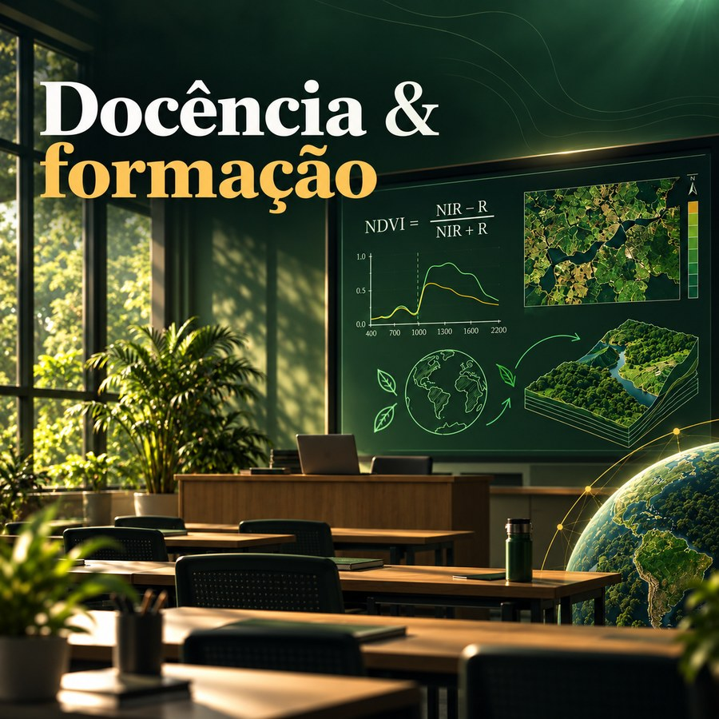
Professor Adjunto na UNISO e tutor na UNESP e na ESALQ/USP em SIG, Cartografia, Ecologia e Recuperação de Áreas Degradadas, além de orientações de iniciação científica, mestrado e doutorado.
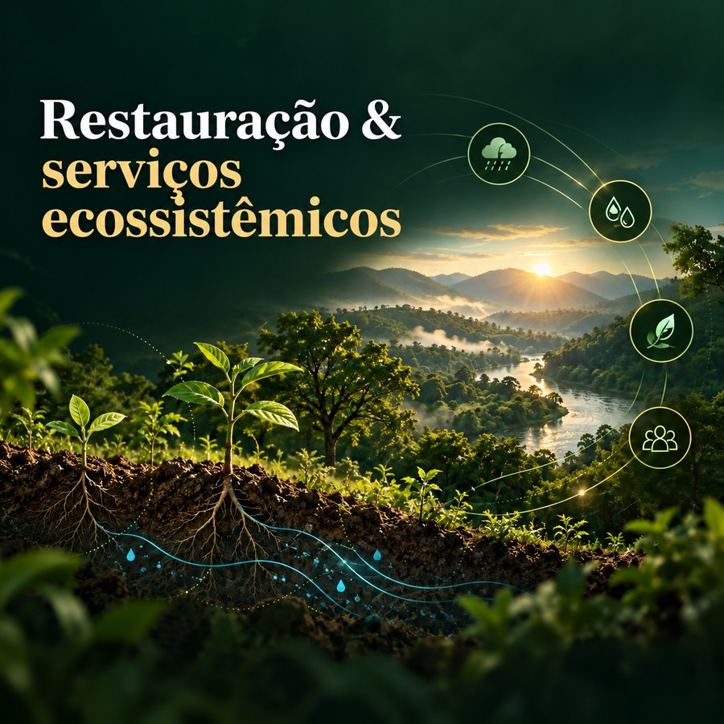
Projetos de recomposição florestal e priorização de áreas para restauração, integrando serviços ecossistêmicos à decisão territorial no pós-doutorado DecisionES-BR.
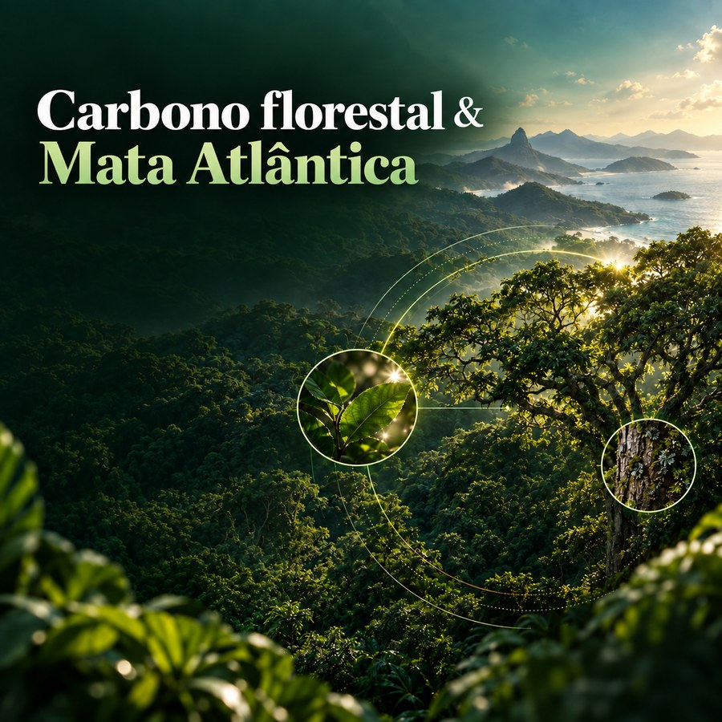
Modelagem do potencial de fluxo de CO₂ com índices espectrais e projeção de cenários (MOLUSCE / CA-Markov) aplicados à APA de Itupararanga e a remanescentes de Mata Atlântica.
Imagem de capa: banco de imagens livre Unsplash.
Detalhamento da experiência
Pós-doutorados, docência no ensino superior e atuação no mercado ambiental.
ESALQ/USP (2024 - Atual)
Pesquisador de Pós-Doutorado (Bolsista FAPESP)
Modelagem espacial de serviços ecossistêmicos, otimização de restauração na Mata Atlântica e colaboração em docência de Métodos Quantitativos e Pesquisa Operacional.
Freie Universität Berlin (2023 - 2024)
Pesquisador Convidado (Sensoriamento Remoto)
Desenvolvimento de algoritmos em ambiente R para simulação de ecossistemas virtuais e nuvens de pontos LiDAR para estimativa de biomassa e estrutura florestal.
UNESP - ICTS Sorocaba (2023 - 2024)
Pós-Doutorando
Modelagem espectral sPRI x NDVI e simulação preditiva de cenários futuros.
Universidade de Sorocaba (UNISO)
Professor Adjunto I (2018 - 2021)
Docência nos cursos de Engenharia Ambiental, Engenharia Agronômica, Ciências Biológicas e Psicologia em disciplinas como Sistemas de Informações Geográficas (SIG), Cartografia Básica, Ecologia e Recuperação de Áreas Degradadas. Membro do Colegiado de Engenharia Ambiental.
UNESP & ESALQ/USP
Tutor e Docente Convidado
Aulas práticas de geotecnologias, manipulação de imagens de satélite, análise estatística e apoio a turmas de pós-graduação e graduação.
Consultor Ambiental Autônomo (Habilitação FIA / SEMIL) (2010 - 2012)
Vistorias de fiscalização de passivos ambientais, análise de cumprimento de Termos de Ajuste de Conduta (TAC) do Ministério Público, fiscalização de Autos de Infração Ambiental (AIA) e acompanhamento de PRADs em colaboração com CETESB.
Analista Ambiental (MEDRAL Meio Ambiente) (2011 - 2012)
Licenciamento Ambiental completo (LP, LI, LO), relatórios técnicos (EIA/RIMA, RAP, EIV, RAD) em linhas de transmissão de energia e empreendimentos imobiliários; mapeamento de APPs e Reserva Legal em SIG.
Portfólio Científico, WebSIG & Consultoria Ambiental © 2026